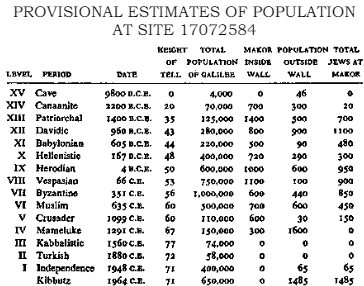
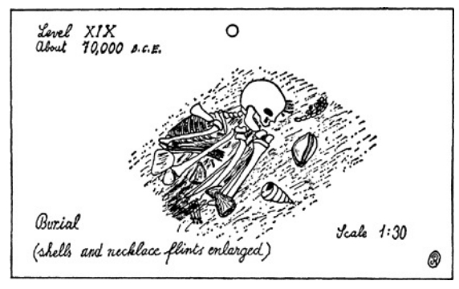
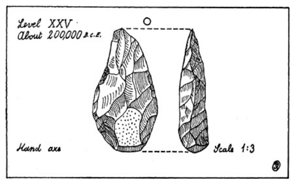

Schematic diagram of Tell Makor from the south on the afternoon of Monday, November 30, 1964, at the conclusion of the first year’s dig. Horizontal scale accurate; vertical scale extended. Solid lines indicate certain sites which will be excavated during subsequent campaigns of 2965-1973 C.E. Observe that the actual distances between levels vary considerably. (For example, as can be seen in the chart on page 867, the distance between Levels XV and XIV is twenty feet, whereas the distance between Levels X and IX is only two feet.) Observe also that the monolith to El, perhaps the most significant of the remains buried in the tell, will be missed by the excavators.
With the approach of November and its threat of rain Cullinane could feel the work at the dig grinding to a halt. His own thoughts were in Chicago, where Vered Bar-El was delivering her series of unnecessary lectures on “The Candlestick of Death.” Paul Zodman airmailed batches of news clippings showing Vered posed with the fatal menorah, accompanied by captions which explained that six of the king’s enemies had been slain and finally the king himself, because, in the timeless words of the Australian journalist, “he was his own worst enemy.” But when Cullinane read the articles he found that Vered had been honest enough to confess that the story was a fake.
Nevertheless, the clippings disturbed Cullinane because they reminded him of how much he loved this delightful woman: when she peered at him from behind the menorah she was positively enchanting and he longed for her return. I’ll propose the minute she gets off the plane, he vowed, but his preoccupation with Vered was interrupted by a newspaper story which altered radically the course of the excavation, not only in 1964 but also for the years ahead.
ILAN ELIAV FOR CABINET POST FOLLOWING KALINSKY RETIREMENT - J’lem Sources Insist Appointment Certain If Religious Parties Agree
When Cullinane read the news his first reaction was: This is what’s been keeping Eliav and Vered apart. But what the relationship was he could not guess and before he could ask Tabari to untangle it, Schwartz from the kibbutz appeared to ask if Cullinane would see one of the women who worked in the dining hall It was big Zipporah, and Cullinane guessed that she was seeking his help in finding a job somewhere, for she was Rumanian and as such was apt to be ambitious. He doubted that he could be of much help, but against his better judgment he allowed her to enter.
She was a handsome woman of thirty, strong and lively, and he recalled how vigorous she was in the kitchen, how rudely amiable in the serving. When she extended her large hand and smiled he knew he was lost. “What is it, Zipporah?” he asked.
The pleasant woman sat down, pointed to the headline about Eliav and burst into tears, not feminine tactical tears but great sobs of perplexity and grief. “Oh, damn,” he growled so loudly that she heard him.
“I sorry, Dr. Cullinane,” she sobbed. “I needing help.”
“I’m sure you do,” he replied banally and even with sarcasm. But as soon as he said the words he felt ashamed and took a quick look at her arms to see if they were tattooed with German slave numbers. They weren’t. It wasn’t going to be one of those cases, thank God! Relieved, he rose, walked to her side of the desk and offered her his handkerchief. “I’m sorry, Zipporah. Now, what can I do?”
She blew her nose and looked at the door. “Can I closing it?” she asked.
“Of course.” He got to the door before her, then escorted her back to her seat. “Now, tell me what’s happened.”
Without speaking she took from her pocketbook the inevitable sheaf of worn papers that every Jew in Israel seemed to have. He groaned. It was to be one of those cases. An appeal to the American Embassy, no doubt. When she had her papers in a neat pile she asked quietly, “Is it true, Dr. Eliav going to cabinet?”
He pointed to the headline in the English-language paper. “I know nothing. But the story seems real.”
“What I wanting to know…” The Rumanian woman could not finish her sentence because tears, which she could not control, dripped off her nose and struck her papers.
Cullinane waited for some moments, wondering how Ilan Eliav’s putative promotion could cause such a flood of grief. Was the husky girl in love with him? Was she jealous of Vered Bar-El? It was too deep for him, so he shrugged his shoulders and waited.
After a while Zipporah blew her nose again and fought to regain control. “I so ashamed,” she apologized. “Usually not crying, but the world… I wanting help.”
“Now put your papers up here, take a drink of water … You smoke?”
“Oh yes!” she cried with relief. After the first puffs she relaxed and asked formally, “Will you do me the honor to listening, Dr. Cullinane?”
“I sure will,” he assured her.
“Here is Zipporah Zederbaum, born Rumania thirty years ago. Married to Isaac Zederbaum nine years ago Tel Aviv. Widow. I working very hard…”
“I’ve seen that. I wish I could find a housekeeper like you in America.”
At this unfortunate word the stalwart girl’s composure left her, and she wept for some minutes. “I sorry,” she apologized. “My husband… I know you hearing many things like this too much … but he no good. Really. Not give me one agorot to feeding myself. Ran away with Yemeni girl. Left her and going to America. Never send me no money and while he walking along a road”—she consulted her papers—“in Arizona. He killed by truck. So now my friend Yehiam Efrati… maybe you know him? He working in dairy.”
“I don’t know him, but he wants to marry you?”
“Yes,” she cried brightly, as if he had solved a puzzle. “It’s so hard, Dr. Cullinane. A widow my age. Not easy to finding a man who will to marry her. But he is good man.” She dropped her head and repeated quietly, “Yehiam, a very good man.”
“You’re lucky, Zipporah, to find a man like Yehiam,” Cullinane said enthusiastically. “Now, what can I do to help?”
“Would you speaking to Dr. Eliav for me? If he going onto the cabinet…”
“We’re not sure of that yet, but let’s suppose he does. What am I to do?”
“He must speaking with the rabbis,” she whispered. “They must changing what they say.”
“What have they said?” Cullinane asked, and the inevitable papers were pushed before him.
“This my birth paper. Good Jewish parents. This my wedding paper. Signed by rabbi. This is a photograph my husband’s death paper. Notary public American here, rabbi’s name here. And this Yehiam Efrati’s birth paper. Also good Jewish family.”
“Everything seems to be in order,” Cullinane said brightly, checking off the various documents.
“And this,” she said dully, “what the rabbis in Jerusalem saying.”
Cullinane took the document, obviously official, and read the pertinent parts:
In the case of Zipporah Zederbaum, widow, who wishes to marry with Yehiam Efrati, bachelor, the judges find that a brother of the deceased husband of said Zipporah Zederbaum is still living in Rumania, and that this living brother, Levi Zederbaum, refuses to grant his brother’s widow permission to remarry. On this point the law is clear, as stated in Deuteronomy Chapter 25: “If brethren dwell together, and one of them die, and have no child, the wife of the dead shall not marry without unto a stranger: her husband’s brother shall go in unto her, and take her to him to wife, and perform the duty of an husband’s brother unto her … And if the man like not to take his brother’s wife, then let his brother’s wife go up to the gate unto the elders, and say, My husband’s brother refuseth to raise up unto his brother a name in Israel, he will not perform the duty of my husband’s brother. Then the elders of his city shall call him, and speak unto him: and if he stand to it, and say, I like not to take her; Then shall his brother’s wife come unto him in the presence of the elders, and loose his shoe from off his foot, and spit in his face, and shall answer and say, So shall it be done unto that man that will not build up his brother’s house.”
Long ago the rabbis determined that the widow of a dead man must not remarry until her dead husband’s brother give his consent, and it was further agreed that this consent must be given in writing, testified to by proper rabbinical authorities. In this case, all that Zipporah Zederbaum needs do is to obtain in writing the permission of her brother-in-law Levi Zederbaum in Rumania. She would then be free to remarry. But since her brother-in-law refuses to grant her this permission she is not legally free to remarry. And her petition to do so is denied.
Cullinane looked up from the amazing document. His first thought was: She’s playing a joke on me. A medieval joke. Then he saw that she wasn’t. “What does it mean?” he asked.
“As it says,” she replied. She was angry and there were to be no more tears.
“In Israel a widow has to get written permission from her dead husband’s brother…”
“Yes.”
“But why?”
“Our law. Husband’s family still has interest in dead man’s wife.”
“Does that mean your brother-in-law in Rumania is offering to support you?”
“Support?” she echoed contemptuously. “No Zederbaum ever helping another.”
“Then why doesn’t he sign the release… let you get married?”
The sturdy young woman handed Cullinane a translation of a letter and sat back clothed in fury as he read it:
Brasov, Rumania Sept. 3, 1964
To the Rabbis of Jerusalem,
I understand from the incredible document delivered to me yesterday that my sister-in-law, Zipporah Zederbaum, whose husband is dead, is not free to remarry unless I sign a paper indicating that I do not want to marry her and that she is free to marry someone else.
I also understand that if I were in Jerusalem my sister-in-law would have the obligation, when she heard that I did not want to marry her, to take off my shoe and spit in my face.
This is the twentieth century, and if I participated in any way in such medieval rites the authorities in Rumania would be justified in considering me a fool. I refuse to sign any such nonsense and I advise you to forget it too.
In disgust, LEVI ZEDERBAUM
Cullinane folded the letter and thought: It’s about what I’d have written. “What can you do now?” he asked Zipporah.
“Nothing,” she said.
“What do you mean, nothing?”
“That’s why I coming to see you,” she explained. “After this letter, nothing to do.”
“You mean you have to live the rest of your life unmarried…while a man is willing to marry you and support you.”
“Yes,” she said simply.
“It’s inhuman.”
“It’s the law,” she said, stuffing the papers back into her purse.
“Law, hell!” Cullinane snapped. “You wait here.” He ran out to the dig, calling, “Eliav? Can you come in for a minute?” When Eliav approached, Cullinane asked, “What’s this about a cabinet position?”
“These things come up from time to time.”
“But this time it’s serious?”
“Could be, but don’t tell anyone I said so.”
“Your first constituent is in my office. Woman by the name of Zipporah Zederbaum.”
At the mention of the name Eliav stopped… cold… refused to move. “No, Cullinane. It would be most improper for me to see her. Not at this point.”
“You won’t talk to her?”
“Look! I know more about her problem than she does. I sympathize. But it would be highly improper for me to speak with her now when I may have to judge her case later.”
“But goddamn it, Ilan. This girl…”
“John!” the Jew cried with great force. “You get in there and give her what consolation you can. And don’t meddle in things that don’t concern you.”
“I’m sorry,” Cullinane apologized. He watched as his friend stomped off; then he returned to the waiting woman. “I’ll speak to Dr. Eliav later,” he fumbled.
“He refused to seeing me, eh?” Zipporah asked.
“Yes, and I understand why.”
“No one seeing me,” she said. “Nothing I can do.”
“There’s no way for you to get married in Israel?”
“None. Here we are having only rabbi marriage, and if they refuse…”
“Somewhere I heard that if the rabbis refused, people fly to Cyprus.”
“Who can flying to Cyprus? The money! And if we go Cyprus… our children bastards. When they growing up they not marry neither.”
“I don’t believe it. You honestly mean that there’s no way you… Hell, you haven’t done anything wrong.”
“There is no way, Dr. Cullinane.”
“Then I’ll tell you what I’d do. I’d get my things together and I’d move in with Yehiam Efrati… now. And if you need help packing, I’ll come along.”
The powerful girl, so hard-working, so robustly attractive, obviously longed for a husband, but she was forced to say, “Unless we married right, what the purpose?”
At lunch Cullinane sought out Eliav, intending to raise hell, but whatever castigations he had in mind were quickly forestalled: “John, please don’t lecture me in this case. Because one of the reasons why I might be taken into the cabinet is to handle just such complexities.”
“Who said complexities? Inanities.”
“As you wish, but this is the law of Israel, and ninety-nine percent of our laws are humane.”
“But this poor girl… marriageable age…”
“I know.”
“Didn’t you sympathize with the brother-in-law’s letter?”
Ilan Eliav took a deep breath, then said slowly, “No, because I’m working to establish that Levi Zederbaum”—Cullinane was impressed by Eliav’s knowledge of the case—“wrote his letter in the way he did so the local Rumanian censors wouldn’t turn him over to the Russian authorities.”
“Suppose you do prove duress?”
“Zipporah can marry.”
“If you fail?”
“She can’t.”
“But, my God…”
“Shut up!” Eliav cried, and in distress he left the tell and stalked back to the dig, but apparently he was ashamed of his rudeness, for later he returned and said, “These are difficult days.” He thrust forward a sheaf of papers. “You think I’m indifferent to Zipporah’s case. Look at these.” And Cullinane studied the documents that Eliav would face if he took the cabinet position:
Case One: Trudl Ginzberg is a Gentile German woman from the city of Gretz, along the Rhine. Brought up a Lutheran, she fell in love with Hyman Ginzberg and against her family’s predictions of disaster married him. With the coming of the Nazis she suffered grievous persecution. Inspired by some inexplicable love of humanity she volunteered to sew the Star of David on her own clothes, fought to protect her children from Storm Troopers and was kicked in the right eye. Now partially blind. By heroic efforts she saved her children and for four years hid her husband in a cellar, providing him and her family with food by working in a factory kitchen. After the war, when she could no longer believe in God, she scraped together money which enabled her to bring Hyman Ginzberg and their three children to Israel, where the rabbis proclaimed, “Trudl Ginzberg is a Gentile. Worse, she is an atheist, and we cannot permit her conversion. Therefore, neither she nor her children can be Jews.” No effort on her part, neither her offer to convert nor her willingness to live according to Jewish law, has succeeded in changing the rabbis’ minds. She is not a Jew and her children cannot be Jews, either. Can you propose a solution the rabbis would accept?
Case Two: The minute you see Esther Banarjee and Jaacov Jaacov you will know them to be Indian. They come from Cochin and have dark skin, limpid eyes and slim bodies. But they are also Jews. In the fifteenth century their ancestors fled from Spain to Portugal to Syria to Turkey and thence to the coast of India, where they intermarried with dark-skinned natives. In 1957 when Esther and Jaacov emigrated to Israel they were informed by the rabbis that because of some technical difficulty they could not be Jews. Their problem is this; they want to marry but since they are not Jews they cannot do so in Israel. If they were Christians, no trouble. They could marry in one of our Christian churches; but they are not Christians nor do they want to be so. They want to be Jews. In India their ancestors were Jews for more than four hundred years, sharing in the trials and triumphs of our people, but in Israel, because they are unable to provide written records reaching back four generations, they cannot be Jews. What to do?
Case Three: Leon Berkes is the son of an orthodox Jewish family in Brooklyn, He made a lot of money running a string of kosher hotels in the Catskills, and when the state of Israel was proclaimed, felt an inner compulsion to join us, but his business was prospering and required his supervision, so he lingered in America, secretly ashamed of himself and muttering to his friends, “If I had any guts I’d be over there helping the real Jews.” On his sixtieth birthday he abruptly turned his hotels over to his two sons-in-law, “fine Jewish boys,” he called them, and came to Israel to invest four million dollars in the Jewish state. Naturally he decided upon a hotel, in Akko, and as an observant Jew announced that it would be kosher. For nearly forty years he had been operating such places and he respected the ancient dietary laws of the Torah, but when he approached the Israeli rabbinate for a certificate he encountered many original problems. The Talmud stated that one could work on Shabbat only in case of dire need, which included the serving of food; but waiters were forbidden to write out meal checks, for that was not essential. Berkes complained, “It means more work, but if it’s the law, okay.” Then the rabbis warned, “All religious holidays to be strictly observed,” and Berkes assured them that in America he had done so. On holidays he did not allow his hotel band to play music, but the rabbis said, “We think it would be more respectful if you kept your band silent for nine days before the Ninth of Ab.”
Berkes said, “It’s terribly expensive, but if that’s Jewish, okay.” Then the rabbis pointed out that the Torah said explicitly, “Ye shall kindle no fire throughout your habitations upon the Sabbath day,” and Berkes said, “I never have a fire,” but they explained that in recent years this passage had been construed to mean that no electrical switch, which might accidentally throw a spark, could be operated. They demanded that he stop all elevators throughout the hotel from Friday night through Saturday. He said, “People are going to grumble, but if it’s the law, okay.” But when the rabbis insisted that the automatic doors leading from the dining room to the kitchen must also remain inoperative lest the mechanism accidentally produce a spark, Berkes said, “This is too much.” The rabbis warned, “If one door moves, we’ll take back your certificate.” So Berkes said, “You’re making it too complicated to be a Jew,” and returned to America. The question: Can we get this good man back to Israel?
“You’re taking everybody’s problems on your shoulders,” Cullinane said with respect.
“And the most complicated is my own.”
“What do you mean?”
“Remember the day we went to the Vodzher Rebbe’s… with Zodman?”
“Yes.”
“And the attendant asked Cohen or Levi? And we all answered ‘Israel’?”
“I still remember the Cohens putting the shawls over their heads.”
“And I said I’d explain later.”
“You did. Cohens are priests. Levis are temple attendants. Israels are the common herd.”
“Every Jew is automatically one of these three, tracing back in unbroken lines to the days of the Torah. All Jews named Cohen, Katz, Kaplan, Kaganovsky… you can guess the others… they’re all priests who even today enjoy certain privileges. Now your Levys, Levins, Lewisohns, Loewes and the rest… they’re all Levis, and they also have a few privileges.”
“But you poor Israels…” Cullinane began.
“I’m not an Israel,” Eliav said.
“At the Vodzher Rebbe’s you said you were.”
“I did, because I don’t take this Mickey Mouse…” He stopped. “That is, my wife… I never told you about Ilana, did I? She died over there.”
“She what?”
Eliav pressed the warm pipe against his chin and tried several times to speak. Finally in an offhand way he said, “I was married to a girl who could have served as the flag of Israel. She was Israel. She had a very special quality. She was shot. Right over there. Right… there.”
“I’ll be damned,” Cullinane said. He remembered that first night when he and Tabari had seen Eliav kneeling on the tell and he was now inclined to say nothing, but intuitively he knew that silence was not wanted. “So we’ve been digging ghosts?”
“That we have,” Eliav agreed. “And one of the ghosts has come home to roost… in a particularly mean way.”
“How?”
“I’m a Cohen… really. I come from a wonderful line of holy men in the city of Gretz, along the Rhine. One thing about a Cohen, he’s never permitted to marry a woman who’s been divorced…”
“How’s that?”
“Under Israeli law a Cohen is forbidden to marry a divorced woman. It just can’t be done.”
“But you and Vered are engaged.”
“That’s right. And if we want to get married we have to fly to Cyprus, get some English clergyman to marry us according to his law, then fly back to Israel and live in local sin.”
Cullinane started to laugh. “We’ve been trying to dig up ancient history and all the time we’ve been living in it.”
“You’re wrong,” Eliav protested. “You’ve been digging in Judaism but you haven’t tried to understand it. John, we’re a special people with special laws. Why do you suppose I asked you to read Deuteronomy five times? Damn it, you stupid Irishman! I’m not a Catholic. I’m not a Baptist. I’m a Jew, and I come from a most ancient people with most ancient laws.”
“I’m beginning to realize that,” Cullinane apologized. “But this Cohen business…”
“You saw Leviticus. The priests ‘shall not take a wife that is a whore, or profane; neither shall they take a woman put away from her husband…’ There it is. And there’s no way we can get married in Israel.”
“Wait a minute! Vered’s a widow.”
“More important, she’s a divorcee.”
“I don’t get it.”
“I knew her husband well. We fought together at many places… a handsome, dashing young lady-killer. Vered was captivated by him and on the day we broke the siege of Jerusalem she married him. But when peace came he couldn’t seem to fit in. Never understood that things had changed, so they got divorced. Then, with the Sinai campaign in 1956, came his second chance. You wouldn’t believe what he accomplished with a column of armored cars, and I suppose God was gracious, for he died in battle.” He paused to remember a gallant, undisciplined friend. “Bar-El was one of the few heroes I’ve known. An authentic hero.”
“But if Vered’s a widow…”
“The critical thing is she was once divorced. If I intended staying on this dig, that would be one thing. We’d fly to Cyprus, get married there, and if later on the rabbis judged our kids to be bastards, when the time came for them to marry they’d fly to Cyprus too. But I can’t join the cabinet and flout Jewish law.”
“You’d give up Vered for a cabinet job?” Cullinane asked in astonishment. And the explosive form of his question satisfied Eliav that the romantic Irishman would face any problems to marry her. His uncle, who was a Catholic priest, his father, who still spouted nonsense, his sister, his friends could all go straight to hell if he wanted to marry Mrs. Bar-El, which he did.
The honest shock of Cullinane’s reaction forced Eliav to reply carefully. He said, “For an Irishman, with an Irishman’s secure history, the question is the way you phrased it. But I’m a Jew, and my history is much different. We were two thousand years without a country, John. I and a few… really, we were a handful… my wife… Vered’s husband… and a marvelous Sephardi named Bagdadi, whom I think of very much these days…” He stopped, and after a long moment said, “We built a state to which the Jews of the world can repair for the next thousand years. Today that state faces critical decisions concerning its basic structure, and Teddy Reich’s convinced me that I’m needed…”
“Where?”
“In the most critical areas. The question you just asked would make sense if you posed it to an Irishman. But the question to ask me as a Jew is this: Would you, in conformance to Jewish law, surrender Vered Bar-El to help preserve the concept of Israel?”
“Would you?”
Eliav evaded the question: “The night my wife was killed on this tell our detachment was on its way to Akko. Vered and her man took care of me, because I was pretty much out of my mind. We stormed into Akko, which Tabari held with his Arabs, and about thirty of us Jews went up against… well, God knows how many Arabs. And somehow I got far ahead of the line and I would surely have been killed, except that this little seventeen-year-old girl came blazing up with a submachine gun. She cleared the street and led me back as if I were her idiot child. I can feel her hand in mine now.”
“Why didn’t you marry her?”
“She’s a lot more primitive than you think. She was fascinated by the gallantry of Bar-El. When he was gone there was the Cohen business. Who wants to flee to Cyprus? And I was never the dashing buccaneer type.”
The two archaeologists stood silent for a moment, looking at the minarets of Akko, where Vered Bar-El had fought her way to save Eliav, and finally the Irishman said, “You’ve taught me a certain humility this afternoon. I withdraw my question.”
“Thanks.”
“But I pick up yours. Do you intend to marry Vered or to serve Israel?” There was no reply, and after a while Cullinane added, “Because I’m giving notice right now, Eliav. You marry that girl… before I leave for America… or I’m taking her with me. And so help me God, that’s it.”
“Vered fought for this country,” Eliav said quietly. “She’d never leave Israel. She’d never marry a non-Jew,” and by their separate paths the two men left the tell.
Next morning the first of two disruptive visitors arrived, Professor Thomas Brooks, traveling through the Holy Land on one of his regular photographic trips, and since he was an influential board member at the Biblical Museum, Cullinane was obligated to care for him while he was in the Galilee. This was not an unpleasant task, for Professor Brooks was an amiable man, teacher of church history in a small Protestant college in Davenport, Iowa, who made additional income by lecturing through the west on “Old Testament Times” and “Scenes from the Life of Christ.” He illustrated his lectures with color slides, which, accompanied by his careful explanations, served better than motion pictures. He was a good scholar, tried to keep au courant with the latest archaeological research, and imparted to his audiences a vivid sense of that tiny area of the world from which the great religions had sprung. He was not allowed, of course, to lecture in Catholic churches, but he suspected that when his screenings were held in public halls rather than Protestant churches many Catholics attended, and he took pains to include in his slides scenes that would have special interest for them.
He was in his late fifties, a fleshy man to whom life had been good, and he traveled with his wife, some years younger than himself, who managed the cameras and the checkbooks. They were a congenial pair, as beloved in the Holy Land as they were back home, and often they had helped rich widows write wills that bequeathed inheritances to the Biblical Museum for its excavations. They were honest people, the Brookses, and they believed in a simple, honest God; but as they finished their photographing tour in 1964 they were disturbed, and they conveyed their apprehension to Cullinane.
“John, I can’t approve what’s been going on here in Palestine,” Brooks said. As an older man, and as a member of the board that employed Cullinane, he always referred to the director as John, while as a fundamentalist he continued to refer to the new state of Israel as Palestine. “I don’t like it at all.”
“What’s wrong?”
“Who wants to see a great gaping ditch running smack down the middle of the Holy Land?”
“They’ve got to have water,” Cullinane said.
“Granted, but Grace and I reflected many times that all these factories… these macadamed roads. Really, they destroy the feeling we used to get from this land.”
“They do, John,” Mrs. Brooks agreed. “I remember when we first came here… the British administered it then, and it looked just as it must have in Bible times.”
“We took some of our greatest photographs in those happy days,” Brooks sighed. “I only wish Kodak had had a better color film in those years. The reds have faded from our best slides and we can’t use them any more.”
“But today,” Mrs. Brooks continued, “you can hardly take a photograph anywhere that tells an audience clearly that you’re in the Holy Land. Now it’s all towns and building developments.”
“I take it you’re rather strongly opposed to progress?” Cullinane suggested.
“Oh, there ought to be some progress in the world,” Brooks conceded, “but it does seem a shame to ruin a land that is so much beloved by people everywhere. I can remember when we first came here, you could find in almost any village a water well which looked exactly as it must have in the time of Christ. We got some of the most extraordinary pictures of women walking to the well with great earthenware jars on their heads. You could have sworn it was Miriam or Rachel. Now it’s nothing but deep artesian wells.”
“Your home’s in Davenport, isn’t it?” Cullinane asked, leaning back in his chair.
“When we can find some time for ourselves,” Mrs. Brooks said. “Mostly we travel.”
“Hasn’t Davenport changed pretty much… in the last thirty years?”
“Davenport’s different. It’s not a holy land to anyone. But Palestine… I hate to say this, John, since you’re working on this side, but Mrs. Brooks and I felt much more at home on the other side of the border. In Jordan. They’ve kept their land pretty much as it used to be. One gets a much better sense of the Holy Land in Muslim Jordan than he does over here in the Jewish sector.” Cullinane noticed that Brooks clung to the old English terminology: the Jewish sector.
“What we mean,” Mrs. Brooks explained, “is that in Jordan today you can still find hundreds of scenes with people in Biblical costume… little donkeys… heavenly-faced children playing by the open wells. You can point your camera almost anywhere and catch a Bible picture. It makes your heart feel warm.”
“You don’t get that feeling in Israel?” Cullinane asked.
His use of the current name for the new nation seemed to offend the Brookses, and the professor quickly re-established the accurate terminology. “This part of Palestine is frankly disappointing. I might almost say irritating. You go to a historic spot like Tiberias, hoping to find something that will evoke for people in Iowa the romantic quality of the place, and what do you find? Housing developments… bus stations… a tourist hotel… and on the very edge of that sacred lake, what? A kibbutz, if you like.
“And if you do try to take a photo that will catch the essence of the place, you don’t find people dressed as they are on the other side. Those wonderful garments that make you think of Jesus or the disciples. No, you find men and women dressed just as they would be in Davenport. Carrying plastic bags back from the supermarket. I saw not a thing in Tiberias that reminded me of the Bible.”
“There were a lot of Jews,” Cullinane said.
“I don’t think that’s funny, John,” Brooks said. He tried to avoid using the word Jew; he had been instructed that the people of that religion preferred to be called Hebrews.
“Aren’t you saying,” Cullinane asked, “that the Muslims on the other side look more like Biblical Jews than the living descendants of the Biblical people do?”
“I’m not saying that at all,” Brooks protested. “But when a land has a special meaning for so many, it ought to be kept…well…rural.”
Cullinane bit his lip and tried to keep from smiling. “A good deal of Christ’s ministry must have been spent in cities,” he pointed out. “Jerusalem, Jericho and Caesarea Philippi. And when you get to St. Paul, he seems to have spent most of his time arguing Christianity in the great cities like Corinth, Antioch and Caesarea.”
“That’s true,” Brooks said, “but I believe that most Americans like to think of Bible figures as living in the countryside. It seems to make them more…well…reverential.”
Cullinane thought that that might be one of the reasons why Christianity was having such a difficult time with some of its urban adherents, that they could not visualize Christ as inhabiting cities, where more and more of the population chose to live. He said, “When Jesus was in Jerusalem or Paul in Athens those cities must have been much like New York. I know that when we dig here at Makor we have to remind ourselves all the time that this was an urban settlement, while Akko down the road was always a fairly substantial city. And I’m not at all sure that Jesus went around, or Paul either, looking like a modern-day Arab.”
“I’m fairly well satisfied that they did,” Brooks said. Then, to ease the tension a bit, for he felt that Cullinane was being obstinate in not understanding his basic argument, he said, “The trip wasn’t a failure. Grace and I caught some wonderful shots at Jericho. What a marvelous spot. You could almost feel Old Testament people moving among those ancient ruins.”
“I suppose you got some Arabs to pose for you,” Cullinane said.
“Two handsome fellows. When they took their shoes off they looked just like prophets from the Old Testament.”
“I still wonder if Jeremiah dressed like an Arab.”
“Our audiences think he did,” Mrs. Brooks retorted. “Now, I’m sure you’re doing some excellent work here, John, but we couldn’t photograph it. Not for our purposes. Because the young people I see out there look like ordinary Americans. It would kill the atmosphere.”
“I suppose in years to come,” Cullinane said, looking up at the ceiling, “you’ll take more and more of your photographs outside of Israel.”
“We’ll have to,” Professor Brooks said. “The Hebrews here simply don’t look right. And every new town or factory eliminates one more possible landscape. We’re forced to work in the other side.”
“But when Jordan succeeds in transforming itself into a modern nation, then what?”
“I’ve thought about that,” Brooks said. “As a matter of fact, right outside Jericho there’s some building going on that pretty much spoils that landscape. So next year we’re coming back with a great deal of film, and we’re going to shoot everything we can and keep it on file.”
“And after that?”
“We’ll probably find some backward area of Arabia,” Brooks suggested. “I think we’ll still be able to get some great shots of water wells and caravans down there.”
At the airport, when the Brookses were about to climb aboard the jet that would fly them home to Davenport in less than fourteen hours, Cullinane experienced an irrational urge that he knew at the time would get him into trouble. As his board member started toward the huge airplane, loaded down with cameras and color slides that would evoke the Holy Land for thousands, Cullinane asked, “Did you get a good shot of our airport?”
The humor of the question escaped the professor, who took it as a personal insult. He was about to say something but the sudden vision of a color slide of the large airport, with taxis delivering Jewish officials with briefcases and soldiers in Israeli uniform, overwhelmed him. He remembered when he had first seen the Holy Land, at the old port of Haifa, where his ship had docked and where a shrouded figure dressed much as Jesus must have dressed two thousand years before, had come ambling along the quay. In that pregnant moment Professor Brooks had sensed what his life mission was to be: to lecture throughout America with slides of the Holy Land showing people how the great religions had originated. And he was now convinced that this could not be done by showing slides of cities or modern developments. The Bible was something ancient. The men who composed it, or who participated in its adventures, were different, and he doubted that he would ever again bother to return to the Jewish portion of Palestine. This brash young digger, Cullinane, irritated him, too, and he thought: I’ll speak to the board about him when I get home. Is he really the man we want representing us in the Holy Land?
Cullinane, watching the bewildered man waddle onto the plane, thought: It would break his heart if he knew that when the disciples met in Tiberias, St. Peter probably said, “Look, James. We can’t possibly get to Jerusalem in three nights,” and James had probably replied, “We can if we scramble.” He thought of Makor, and reflected on how difficult it was to comprehend any past age: If a town of a thousand people exists for six thousand years, as Makor had, this means that nearly a quarter of a million different human beings must have lived inside our walls. How impossible it is to remember that they were ordinary people, who helped evolve and diffuse Judaism and Christianity and Islam. They didn’t go through life posing in bedsheets, and many of their greatest decisions must have been made when they traveled to mighty cities like Antioch and Caesarea, or to significant ones like Jerusalem and Rome.
“God,” he cried, as he uttered the prayer of the archaeologist, “I wish I could see Makor for one day as it actually was.”
But the vast plane thundered in its chocks. Its jets reverberated. Men covered their ears and the great machine lumbered down the long runway, gaining speed until it rose from the Holy Land, turned gracefully toward the sea and headed for Davenport, Iowa.
As he drove back to the dig, brooding upon Professor Brooks’ image of religion, which would condemn an area and a people to ancient ways of life, he became aware that a car was following him and he looked back to see a red-painted jeep that was famous throughout the Holy Land. At the wheel, hunched up like a giant flying through space, sat a very tall blond man, hatless and wearing a dark brown sackcloth clerical habit. His hands grasped the steering wheel as if they were going to crush it and his jeep bounced along at a careless speed. Obviously it was headed for Makor, and Cullinane was pleased to see it coming. He sped ahead, parked his own jeep at the door and ran into the office, crying, “Father Vilspronck’s coming! Tell the architect to get the drawings ready.”
In a moment the door slammed open and the huge brown priest began greeting Eliav and Tabari in the comradeship established through years of working with them at one dig or another. He dropped into a chair, leaned across the desk and caught Cullinane’s two hands. “What contradictory things have you been digging out of my ground?” he demanded, and the question was not preposterous, for by dint of continued intellectual effort Father Vilspronck had made the Holy Land his own in a strange and meaningful way. Nineteen years before, as a young priest from Holland, to which he would return one day a cardinal, he had arrived in Palestine on the same boat that had brought Professor Brooks, and he had asked himself: Would it be possible to determine in a non-hysterical way what happened in the Holy Land during the first four hundred years of Christianity? He had started then to piece together all fragments of knowledge relating to the problem, and as the years progressed he became the world’s leading authority on this subject. During one period he had served as a parish priest in Germany, and this had kept him from his chosen work; other years he had spent in Rome close to the powerful cardinals, who had spotted him for preferment, and although he was able there to study the great Vatican documents on Christianity’s beginnings, he was unable to proceed with his digging. But always he had managed to find some wealthy Catholic layman who would provide him with the funds necessary to return to Palestine for his researches. Now he smiled at Cullinane, whom he had known years before in the Negev when they both had worked for Nelson Glueck, and he said in the manner of a bad little boy cajoling his father, “Well, John, you know what I want.”
“I have them coming,” Cullinane replied, and he asked Tabari to speed up the architect, but before the Arab could do so, the expert from Pennsylvania entered the office with rolls of drawing paper, which he spread upon the desk. They were, as Father Vilspronck had hoped, detailed drawings of the foundation lines uncovered at Level VII, where a Byzantine basilica had ridden over a Jewish synagogue. Giving only a cursory glance at the former, Vilspronck carefully traced out the relationships of the synagogue stones. When he had done this he asked to see the lintel stone that had been found in the basilica wall, and for some minutes he studied the remarkable find in silence. Then he asked, “Where’d it stand in the wall?” Photographs were produced and the giant priest reconstructed what the men had seen that day. Finally he turned to the architect and asked, “Have you attempted any projections?”
The Pennsylvanian coughed and said, “After all, the length of wall we uncovered was only…”
“I know,” the priest interrupted. “But I take it you did make some guesses.”
And the architect flung out a large sheet of paper on which the two walls were shown as found, rock by rock, prolonged into full-scale guesses as to what their finished edifices must have been. If an observer had wanted to witness the true mystery of archaeology, the manner in which living men fight to penetrate the minds of men long dead, he should have seen that drawing of the Pennsylvania architect. As a basis for his deductions, the architect had merely twelve feet of basilica wall running from northwest to southeast; below that he had a right angle marking the earlier synagogue, and using only these slight clues he had drawn the completed buildings, and in doing so had come very close to what the future digs at Makor would uncover.
Father Vilspronck studied the synagogue and asked, “Why do you make it this size?”
The architect replied, “Judging from all the synagogues we’ve uncovered so far, our lintel stone is not large enough for a main entrance. So I must conclude that it rested over one of three smalí doors. That yields a façade like the one I’ve drawn. The thickness of the walls is exactly what we’ve found elsewhere. Working from these hints, I’ve spent a lot of time in the old synagogues at Baram, Kefar Nahum and Beit Alfa. This is about what we’re going to find.”
“I agree,” the priest said, twisting the paper so that he could study the synagogue from fresh angles. He was paying no attention to the later basilica, and Cullinane received the distinct impression that as a priest the big Dutchman was disappointed in what he was uncovering at Makor but as an archaeologist he was gratified. “Remarkable,” he said finally. “It bears out what we’ve found everywhere else.” He shrugged his shoulders, then asked abruptly, “You done any carbon dating?”
“No need to,” Cullinane said. “Our date of 351/2 CE. for the destruction is as good as if they’d left a signed copy of the orders. Our guess as to 330 for the original building of the synagogue…plus fifteen or minus fifty as you wish.”
“That’s what I thought,” Father Vilspronck said. Brushing away the architectural drawings he asked, “I suppose you’ve made a table of probable populations?”
“We have,” Cullinane answered guardedly.
“Care to let me take a look?”
“We’d rather not… at this point.”
“How about the synagogue level?”
Cullinane smiled. “I said we’d rather not, but you knew we would. Usual restrictions?” The priest agreed and Cullinane drew from a locked drawer a document which in the army would have been classified Top Secret. He handed copies to each of the archaeologists and watched with amusement as Father Vilspronck darted his eyes directly down to Level VII, where he checked the population figures. As soon as he had completed this, the big man studied the other figures casually.
“I notice that in 1560 C.E. you have the tell standing six feet higher than it does now?”
“Probably did,” Cullinane said. “Bedouins seem to have mined the place for cut stones in later years, and the height must have dropped considerably.”
The blond priest asked a few more irrelevant questions, then came back to Level VII. “Would you say that these figures for the Byzantine period are pretty accurate?”
“Just educated guesses,” Cullinane confessed. “But if the synagogue was that big, it had to serve about eight hundred fifty Jews. Of course we’re extrapolating from Kefar Nahum and Baram.”
The perplexed Dutchman placed the sheet of figures, which summarized so much learning, on the table and slapped it with his big hands. “At least you’re consistent!” he growled. “Every dig for the last thirty years has confirmed this story of Jewish persistence, and sooner or later we’ll have to adjust to it.”
Eliav lit his pipe and asked, “But you adjusted to it years ago. It’s your discovery.”
The priest laughed. “Half of me accepts. The other half doesn’t.”
“Is it so difficult?” Eliav asked.
Father Vilspronck returned the estimates to Cullinane, who collected the other copies and locked them in his desk. For any level the figures might be wrong by fifty per cent, but as the years passed and refinements were made, savants throughout the world would have to adjust their theories to these Makor facts, as the Dutch priest now prepared to do: “When I went to university the professors had an absolutely clear understanding of the Holy Land. A group of excellent Hebrews lived here for some two thousand years. Their religion grew stagnant and Jesus Christ appeared, luring about half the Jews to Him. The others clung on desperately and in 70 C.E. rebelled against Rome, and Vespasian destroyed both them and their temple. In obedience to God’s command that they be a perpetual witness, they wandered homeless through the world while Christianity took over, and it was their punishment to wander until they finally converted to Christ. It was a neat, clean theory and that’s what the world believed. My first shock came when I found that in 135 C.E. the Jews, none of whom were supposed to be here, launched an even bigger revolt against Hadrian, and the recent discovery of letters actually written by Bar Kochba, who led the revolt, have had a startling effect on all of us. Once more we were told, ‘All Jews were driven out,’ but now we begin to excavate these synagogues of the fourth century and we find there were more Jews here than before. The synagogues were big, handsome buildings. Serving a very large population. Kefar Nahum, Baram, now Makor. All tell the same story. And three hundred years after that, when the Muslims come, we still find large Jewish populations. And four hundred years after that, when the Crusaders came, there were still Jews around.” He stopped and his face revealed his perplexity. “Something was going on here that the history books did not tell us.”
Father Vilspronck had begun his labors in the Holy Land intending to assemble the testimony that would reinforce Christianity, and it had become the major irony of his life that his work served primarily to tell the world more about Judaism; yet he persisted in his researches, for he knew instinctively that when the honest relationships were revealed, both Christianity and Judaism would be more meaningful and the ultimate conversion of the Jews closer at hand. He also knew something which he buried in his conscience, leaving it to others to develop: the arrival of Jesus Christ in the Galilee did not mysteriously signal the disappearance of competing religions; they survived with stubborn vigor, and if the testimony of the synagogues could be trusted, actually increased their power. It was not until the Greeks, doubling back with the great messages of St. Paul, reached the Holy Land that Christianity got much of a hearing in its place of birth. But that was for others to narrate.
The husky priest asked if he could visit the dig, but Cullinane soon discovered that Vilspronck had no real interest in the excavations; he had already visualized most of what had been done. His real desire was to talk with a fellow Catholic, and the two men sat on top of the mound looking toward the minarets of Akko while they discussed one of the prime intellectual mysteries of the world. “I don’t suppose you’ve found any clues that would relate to Flavius Josephus?” the Dutchman began.
“None. We know from the scars that there was a general destruction of Makor about 66 C.E. It’s probably safe to guess that it was burned by Vespasian.”
“Yet there’s that tantalizing passage in the commentary on Josephus: ‘Jewish tradition claims that Flavius Josephus escaped by night from Makor.’” He threw pebbles toward the ravine into which the great Jewish general had fled, abandoning the town to its destruction. “I’d give a lot if we could find some tangible proof that that rascal had been involved in a site which he had later refused to write about.” The Dutchman clenched his hands and studied the vacant trenches into which he could partially see. “Isn’t it logical to suppose that if Makor were the first Jewish town that Vespasian reached, General Josephus would have been here to fight him? How did he escape by night, and why didn’t Josephus himself speak about it? I know why.” The priest rose and stalked about the tell, trying to visualize the town as it must have been two thousand years earlier. “Josephus refuses to mention Makor because here he behaved in some craven way. He writes at length about Jotapata, only a few miles south, because there he was heroic. I tell you, Cullinane, the man always picked and chose. Always!”
By this means Father Vilspronck hoped to explain away the mystery of Josephus. For a score of years this learned Jew had wandered back and forth across the land that Jesus had trod, and during the very years when the actuality of Jesus must have been greatest. In his books Josephus discusses all aspects of Jewish life, the good things and the bad, and he probes into relationships that were not known until the discovery of the Dead Sea Scrolls; and what the archaeologists are uncovering supports the fundamental accuracy of this vivid reporter.
Yet never once does he mention Jesus Christ, the greatest Jew of his age, nor does he refer to Nazareth, although he writes extensively of cities not more than nine miles away. It is a nagging, gnawing fact that the most acute observer Palestine produced saw fit to ignore the major occurrence of his lifetime, the impact of Jesus Christ upon the world. An honest researcher like Father Vilspronck was therefore driven to ask, “Was that impact less than we have been led to believe?”
This question the priest was willing to ask, but he had an answer. “I think that Flavius Josephus consciously suppressed all mention of Jesus Christ and Nazareth, just as he suppressed facts about himself. We know he was a liar,” Vilspronck said. “Time and again we catch him in falsifications. If he says there were eighty thousand Romans, we find there were forty thousand. If he claims to have been a hero, we discover later that his behavior was despicable. In Josephus we have the case of a loyal Jew who convinced himself that Jesus never existed. He had probably seen the followers of our Lord face to face, yet he tried to erase Him from history,”
Silently the two men watched the sun sink behind the minarets of Akko, and a sense of the immensity of the problems they were discussing descended upon them. Finally Vilspronck said, “I used to hold Sigmund Freud in contempt. An enemy of my church. Now I find young priests reacting the same way to me. They feel I shouldn’t inquire into these matters. But when you start digging into a human soul, or a tell, or a historical concept, you quickly find yourself at levels of rawness you did not anticipate. But they confront you and you follow them to their conclusions.”
He rose to his full height, stalked over to Trench B and accidentally stood above the still-buried water shaft through which General Josephus had fled in the night. Turning to Cullinane he said, “The complexity of God is so profound and the mystery of Jesus so great that the addition of one more historical problem like the silence of Josephus must be a minor matter. If your faith is capable of encompassing Jesus it can certainly absorb historical contradictions.”
But he was about to be tested by an experience much more difficult to absorb than mere historical contradiction: he was to encounter an exceedingly difficult theological problem. The confrontation happened by accident. He was parking his jeep after having driven Cullinane from the administration building to the mess hall when he said, “I’d better wash up. I seem to have picked up a lot of dirt on the tell.”
Unluckily, as things turned out, his remark was heard by Schwartz, who said, “Use my room,” and he led Vilspronck into the darkness.
They had been gone only a few moments when they returned angrily and it was obvious that something serious had happened, for Vilspronck was flushed and Schwartz belligerent. An awkward silence followed, broken by the Dutchman, who said quietly, “I think I’ll skip supper tonight.” He stalked from the hall, wedged himself into his jeep and with a flurry of dust turned it around in a tight circle, a future cardinal who had been able to adjust to whatever new historical evidence the tell was producing concerning Jews in ancient Palestine or Jesus in the Holy Land, only to find himself unprepared to face the reality of either condition as exemplified in a modern kibbutz. As the jeep sped away, Cullinane shouted, “What happened?” and the big priest called back, “You’d better look at the signs in your world.”
Perplexed by this reply Cullinane returned to the mess hall and asked for Schwartz. When the secretary appeared, Cullinane asked, “What did you do to Father Vilspronck?”
“He had a ticklish digestion. Found he wasn’t hungry.”
“What did he mean—the signs in my world?”
Schwartz hesitated, not because he was embarrassed by what had happened but because he preferred not to involve Cullinane. Then, shrugging his shoulders, he said, “Something he saw in my room.”
“Maybe I’d better see it too.”
“Why not?” Schwartz asked indifferently, and he led the way to a dormitory building in which he had been allocated a one-room apartment. As an unmarried member of the kibbutz he was entitled to no more, so that even if he served as secretary for many years, he would still be allotted this one room. It was in no way unusual—desk, chair, bed, water jug, and of course the three essentials: a large bookcase jammed with publications, a record player with its stack of classical records, and a colored reproduction of a painting by Marc Chagall—except that across one wall hung a carefully lettered banner which read: We did so crucify Him.
This was the banner of younger Jews who had survived Germany and Arab invasion and who no longer cared what the rest of the world thought about them. In early 1964 their motto had become notorious, in an underground sort of way, for at that time Pope Paul VI’s visit to the Holy Land drew attention to the possibility that the Catholic Church might issue a pronouncement absolving present-day Jews of blame for the crucifixion of Jesus, and it was widely hoped that this generous gesture would remove the stigma under which Jews had suffered for nearly two thousand years. Some well-intentioned people actually thought that such a statement would deprive anti-Semitism of its moral base and would make it difficult for future hate-mongers to initiate pogroms. Throughout Israel a surge of hope attended discussion of the matter and one hopeful group had even written to the newspapers: “It will be a glorious day when the Christian Church finally exonerates us of our guilt.”
That letter was certainly not signed by Schwartz of Kibbutz Makor nor by any of his friends. They held the offer of absolution to be insulting to the Jewish people and the Pope’s visit to be an act of condescension. They drafted a different letter, which Israeli newspapers considered inflammatory and refused to publish: “It is preposterous for any Pope to come here distributing a forgiveness which is not his to dispense. For two thousand years we Jews have been abused by Christians and it is not their prerogative to forgive us. For them to do so is humiliating both to them and to us, for we are the ones who should forgive them.” As proof of their intention to remain stiff-necked, as God had commanded, Schwartz’s Jews flaunted their unyielding banner: We did so crucify Him.
“Take it down,” Cullinane said.
“Are you kidding?”
“Take it down!” the Irishman roared, unable to maintain his placid nature.
Schwartz laughed and this infuriated Cullinane, who grabbed at him as if to catch his mocking head and punch it, but Schwartz easily evaded him and the two stood facing each other. Cullinane controlled his anger and said, “Right now in Rome the bishops are meeting to correct an ancient wrong. All that you Jews hope for depends on men of good will like Father Vilspronck. And you insult him.” It was obvious that Cullinane was including himself among the men of good will who sought to improve and protect Jewish-Christian relations, and to him also the sign was offensive.
Schwartz ridiculed his well-meaning counselor and said, “Nobody takes that good-will crap seriously any more.”
Cullinane flushed and said grimly, “Then accept my ill will. Take down that sign.”
“Nobody in this room can make me.”
With a leap Cullinane reached the wall, thrusting his fingers behind the cloth and ripping it into two parts. Schwartz rushed up behind him, grabbed at his arms and wrestled with him. Finally Cullinane broke loose, but as he did so, Schwartz got his right arm free and with a wild swinging blow clipped Cullinane along the head and jaw.
The blow so astonished the men that they forgot the torn banner, dropped their arms and stared at each other. Schwartz was ashamed of what he had done and Cullinane was stunned both by the blow and by the furiousness of the struggle, yet he was unable to control his loathing for the sign, so while Schwartz watched he returned to the wall and tore the banner to pieces. “Neither of us can afford hatred,” he said.
Impassively Schwartz watched the destruction of his sign, then said coldly, “I don’t hate anyone. I don’t intend insolence to decent men like Vilspronck. It’s just that I no longer give one good goddamn what you think about Jews. Either of you. For nineteen centuries well-intentioned Jews like me tried to accommodate ourselves to what people like you wanted. And where did it get us? We were attentive to kings and Popes. And what did they do in return? Now we’ve won our own land and we’re going to keep it. And what you or Vilspronck or the Pope or General de Gaulle thinks about it is of no concern to me. Not one little bit.”
Responding automatically Cullinane shot out his right fist and caught Schwartz on the point of the chin. Like an amazed oak that had paid no attention to the first chipping axe blows, the dark-skinned Jew tottered, then fell in a heap.
This was the first time Cullinane had ever knocked a man unconscious and he was appalled: “My God! I’ve killed him!” But to his relief Schwartz easily recovered, rose to one knee and rubbed his jaw.
“I suppose I deserved it,” he said. And as they walked back to the mess hall Cullinane lavished attention on him as if he were a sick child. Earnestly he said, “It does matter what we think…Vilspronck and men like me… because at the time of crisis we might be the ones who will rescue you.”
Schwartz paused to look at the eager Catholic and said, “For Jews it’s always the time of crisis. And no one ever rescues us.” But that night the two men ate together.
Next morning Vered flew in to Lod Airport on her return from Chicago. When she ran down the ramp like a bright little wren come back to resume control of the tree outside the kitchen, Cullinane thought: What an adorable person.
It had been his intention to ride back to Makor with Vered, so that he might propose again, but this was neatly forestalled by Eliav, who pulled her into his car and drove off, leaving Cullinane and Tabari to bother about the luggage. When Cullinane finally overtook them he and Tabari could see in the car ahead the pert figure of Vered speaking rapidly, interrupted now and then by some sharp rejoinder from Eliav, who kept pointing at her with his pipe stem, as if he were a college professor.
“You think this Cohen business will wreck the marriage?” Cullinane asked.
“Something’s wrecking it. And remember the particular job they’re offering him. He certainly couldn’t accept that job on Monday and marry a divorced woman on Tuesday.”
“What do you think of such rigmarole?”
“I take it seriously.”
“How can you?”
“By looking at history. For something like three hundred generations my family has lived in this area. And in that time we’ve seen a lot of people come and go. But the Jews hang on forever. Because they’ve had that tight body of God’s law binding them together. Today our boy Eliav, who was one of the heroes in the creation of this state, is trapped by the very law he helped preserve.”
“If he had any guts he’d get on the first plane to Cyprus and tell the government to go to hell.”
“John!” the Arab cried. “You’re talking like a liberal Catholic. If the Pope tried to hand you a deal like this Cohen-widow business, you’d ignore him and fly to Cyprus. As a Muslim so would I. But can’t you see the difference? Nobody on the outside is forcing Eliav to respect the ancient law. He did it to himself… by establishing Israel. I’m sure he didn’t intend to set up a state where such law would operate…but that’s what he’s done.” The two men relapsed into silence, which Tabari broke by predicting, “Within two weeks, John, you’re going to have a wife. That girl up there’s not going to marry Eliav.”
“You think not?” Cullinane asked hopefully.
“And then the real funny business begins. Out of sentiment you’ll probably want to marry Vered at the tell, with the kibbutzniks and old Yusuf as witnesses …”
“That would be ending the dig with a bang. You in robes giving the bride away!”
“I’d do it, too,” Tabari laughed. “But haven’t you heard? In Israel such weddings are forbidden.”
“What do you mean? I’d get papers from the American Embassy.”
“Completely impossible. The rabbis say that in Israel no Jew can marry a Christian. Never. So when you propose to little Vered, get yourself two airplane tickets to Cyprus, because you’ll never get married here.”
“Outrageous!” Cullinane cried. “When the Catholic Church tries a trick like this in Spain, the New York Times has front-page articles about it. You mean that I…”
“I’m in the same boat,” Tabari protested. “As a Muslim I couldn’t marry Vered, either, though I’d like to. We’d have to fly to Cyprus. Matter of fact I did…when I married my wife. She’s a Christian Arab. And Christians and Muslims aren’t allowed to intermarry either.”
“From the way you talk, half the people in Israel who want to get married fly to Cyprus. I don’t believe the rabbis issued these rules at all. I think the airlines did.”
In the forward car the conversation was brisk, with Vered saying, “You needn’t be so superior. There were many things about America I liked.”
“Did you see any American Jews?” Eliav asked.
“Yes. And some impressed me very much.”
“Suchas?”
“Jews who run hospitals, and endow libraries, great art museums, universities. Of course, I also saw the fat, overdressed dowagers. Plenty of them. But somebody’s been giving us a very bum steer about the American Jew. He can be a most powerful person.”
“Would you want to live there?” Eliav asked.
“No. I want to live here…where I helped build a nation. And I want to live with you. And I want to get it all settled by the end of this week.”
“Teddy Reich’s meeting with the prime minister…”
“I don’t want Teddy Reich to be involved, or anyone else. Ilan, you’re to tell me now. Are we going to get married? When are we going to get married?”
“How can I decide until I hear what Teddy has to say?”
“I’ll help you,” Vered said primly, and she handed him a small slip of paper. “On Tuesday there’s an Air France plane to Cyprus. On Wednesday there’s Cyprus Airlines. On Thursday there’s B.E.A. And on Friday morning there’s El Al.”
“And on Saturday I suppose there’s something else.”
“There will be no Saturday… no Sunday… ever.” She folded her hands and kept her eyes straight ahead. When Eliav pointed at her with his pipe she was not looking.
“Is this an ultimatum?”
“The last plane that we will ever consider flies out of here Friday morning. If we aren’t on it…”
“You’d marry Cullinane? A non-Jew? And leave Israel? I don’t believe it.”
“There’s an easy test. It comes Friday morning.”
In silence Eliav drove toward Akko, then asked bluntly, “If I chucked the cabinet and took a teaching job … England… America… would you marry me?”
“Han,” she said softly, and her folded hands left her lap and clutched his forearm, “on the night Ilana died I should have taken over. When I went forward in Akko to save you, it wasn’t because you were a valuable soldier. You were a man, a splendid man, whom even then I loved.” She began to cry, and whispered, “We should have married sixteen years ago, but then I didn’t understand. Now I do. Make up your mind, Ilan. I’m proposing to you. Marry me now.”
Eliav kept his hands on the steering wheel and his pipe clenched between his teeth. Staring at the minarets of Akko he turned the car eastward along the Damascus road, and the moment when he should have made his decision passed, and in various airports around the world the four planes that would fly that week to Cyprus tested their engines and were swept out by women wearing overalls. It was Monday.
When the archaeologists reached the dig the mood was autumnal: only Yusuf and his family of twelve worked at the job of closing down the installations and it was obvious that the old man was beginning to find himself isolated in Israel. Already his children were learning Hebrew and adopting kibbutz ways. His three wives were accommodating themselves to Israel, and the pregnant one was even going by herself to the Kupat Holim doctor to discover how to have a baby in a modern way. From their children the mothers were learning Hebrew, and the old patriarch was left alone, a man out of place in a world that he would never catch up with. His eleven underlings, once so subservient in Morocco, now assumed easy control of the family; no longer was he a man of authority, and as the years passed, the half-blind old man would grow in bitterness, while his new land stole from him his dignity, his language and his comprehension. On Tuesday the Air France plane took off for Cyprus and Morocco.
Ilan Eliav did not laugh at old Yusuf in his deepening solitude, for he felt himself to be in a comparable prison. Vered was proving unpredictably difficult; she still insisted upon an immediate answer. “The last plane leaves on Friday,” she warned. Wednesday came and Thursday, and B.E.A. made its flight. On Friday morning Cullinane, watching two people whom he cherished caught in such a vise, intruded against his own best interests; waiting till he found them together in the ceramics room, he joined them casually and said, “I’m not using a phrase when I say that what you two are doing to yourselves is breaking my heart. Eliav, if you decide to chuck the cabinet business, if you do fly to Cyprus, I will personally guarantee you work for ten years here at Makor and a teaching position in the Chicago area for the rest of your life. And I’m certain we can find Vered a job teaching archaeological ceramics. I make this offer because I don’t want you to reach decisions due to economic pressure.”
“I’ve been asked to teach at Oxford,” Eliav said dryly. “Knowing my background you must appreciate how enticing that would be.”
“I spoke only as a gesture of honor. I don’t want to marry Vered because you couldn’t…”
At this moment Vered was consulting her watch, and she seemed to be marking off the minutes one by one, until finally she rose and said quietly, “The last plane has gone.” Looking at Eliav she placed her hands in his and stood tiptoe to kiss him. “I wanted you so much,” she said haltingly.
She broke down and Eliav was unable to console her, so Cullinane, moving quietly, placed his arm about her shoulder and drew her away. “We’ll come back to Makor in the summers,” he said. “When he can, Eliav will leave Jerusalem and work with us.”
She pushed him away and looked at him as if he were a stranger. “What are you saying, John? I warned you I’d marry only a Jew.” Then, seeing the shock on his face, she muttered, “Damn, damn,” and ran from the room.
The meaning of her behavior did not become clear until three o’clock that afternoon when Paul J. Zodman arrived unannounced in Israel, jumped into a car supplied by the U.J.A. and roared up to Makor. Bursting into an end-of-week staff meeting he said crisply, “I stayed out of this for a week. To give Dr. Eliav the time he needed to make up his mind. He hasn’t married Vered. Neither has Cullinane. So I’m going to. Sunday morning.”
It was Cullinane who said the asinine thing. He stared at Vered, who had regained her composure and was again a little Astarte, her eyes modestly downcast, and then he looked at Zodman, expensively dressed in blue sharkskin, freshly shaved, committed and eager. “But you already have a wife!”
“Had,” Zodman corrected.
“Oh, my God!” Cullinane cried. “Is that why you sent me the cable Come to Chicago? You knew I couldn’t leave and you gambled that Vered could…”He saw Zodman and Vered smile, and to his surprise he cried, “Zodman, you’re a plain son of a bitch!”
The merchant brushed this aside and said congenially, “Look, John! I came here two months ago an unmarried man. I saw two other unmarried men, you and Eliav, allowing an adorable widow… So I brought her to Chicago to see if she’d marry me.” There was silence, after which Zodman said quietly, “She said ‘No.’ Wouldn’t even let me romance her. Said she was engaged to Eliav, and that if he wouldn’t marry her because of the Cohen business, she might marry you, John, and to hell with being a Jew.”
The group gasped, even Vered. She looked appealingly at Zodman and reminded him, “You were not to speak of that.”
But Zodman continued, “Somewhere along the line all of you have loused things up, so on Sunday, Vered and I are getting married and flying back to Chicago.”
Cullinane looked at the various people and said plaintively, “This dig is going to end just like Macalister at Gezer. My executive goes into the government. My pottery expert flies to Chicago. Tabari, you and I are going to dig this tell all by ourselves.”
“We’ll find you somebody,” Zodman joked; but as Eliav had pointed out, it was never easy to be a Jew, and the Chicago millionaire was about to discover this in a most painful way. He proposed to drive Vered that night to Jerusalem to get a permit for their marriage, but Eliav reminded him that he couldn’t drive because it was Shabbat. “Who gives a damn about Shabbat?” Zodman snapped, and he roared his borrowed car southward across the Galilee.
In Jerusalem no one would speak to him on Shabbat and on Sunday he was advised by the rabbinical board, “Sorry, Mr. Zodman, but you can’t get married in Israel.”
Without raising his voice he asked, “And why not?”
“Because we have decided that no divorce granted by an ordinary American rabbi can be trusted.”
“Rabbi Hirsch Bromberg is scarcely average.” Zodman had been on the committee that selected Bromberg.
“He’s not on the approved list,” a secretary reported.
Still keeping his voice low Zodman said, “I also have a perfectly good civil divorce from the state of Illinois.”
“Israel recognizes no civil divorce,” the rabbis replied.
“You mean to say that from this little room you’re going to judge all the Jews of the world?”
“In Israel it is our responsibility to say who can get married and who cannot,” the rabbis insisted.
In a very low voice Zodman asked, “And I can’t?”
“No.”
“I’m a large contributor to the Republican party,” Zodman said ominously. “I know Senator Dirksen and Paul Douglas.” His voice rose to a roar. “And I will not accept this insult.”
He stormed down to Tel Aviv to see the American ambassador—the state of Israel claimed Jerusalem as its capital and governed the country from there, but foreign powers, still holding that under the United Nations agreement all of Jerusalem was internationalized, insisted upon keeping their embassies in Tel Aviv and recognizing only it as the capital—but the legal aide to the ambassador assured him that the situation in Israel was precisely as the rabbis had explained it: there was no civil marriage; the local rabbis refused to recognize divorces issued by most American rabbis; and there was no conceivable way by which Zodman could marry Vered Bar-El. “Of course,” the young man suggested, “what many do is to fly to Cyprus. Such a wedding does leave the status of the children to be born of the marriage uncertain, insofar as Israel is concerned, but if you don’t plan to live in Israel…”
“Me? Live in Israel? Are you kidding?” And Zodman drove Vered back to Makor, cursing most of the way.
There it was agreed that Zodman and Vered must fly to Cyprus, as so many other Jewish couples were doing, and in the days required for Vered to clean up her work on the first year’s dig, the five leaders of the expedition had repeated opportunities for extended cross-questioning, during which Vered made her position clear: she was leaving Israel not because she liked large cars and air-conditioning, which her friends would charge, saying that she had sold out to the fleshpots of Egypt; not because she was afraid of the future, for she had given ample proof of her courage; not because her allegiance to a Jewish state had flagged, for she knew Israel to be the only tenable solution in a world where other sovereign states had been unable to protect the Jew or give him any honorable alternative to a homeland of his own; but rather because she felt that as a human being aged thirty-three she could no longer bear the burdens of a religion in the throes of becoming a state, with its military problems, social problems, economic problems and especially its complex religious problems. “I’ve done my part for Judaism,” she said without bravado. “I risked my life in more than a dozen battles, lost my husband, lost most of my friends, and I really do believe that I’m entitled to say, ‘Rachel, from now on you be the Jewess. Little Vered is just too damned tired.’”
Her words had such a startling effect on Eliav that Cullinane thought the new cabinet minister might strike her, but he clenched his hands and asked coldly, “How can you turn your back on all we fought for? Can’t you remember Safad?”
And Vered, speaking softly as one who has discovered her portion of truth, however meager, said, “Do I remember? Eliav, it seems to me we Jews spend our lives remembering, and I’ve suddenly discovered that I’m sick and tired of living in a land of remembrance. My year in Jerusalem begins with Rosh Hashana when I remember Abraham, four thousand years ago. Then comes Yom Kippur, and we remember everything. The Feast of the Booths and we remember the desert years. Like a great bronze bell tolling over the churches of Jerusalem, we tick off our days and remember our grief. Of course, there are a few happy days. Simhat Torah, Hanukkah, when we remember the victory of the Maccabees, Arbor Day for remembering trees. At Purim we remember Persia three thousand years ago and at Passover we remember Egypt even longer ago. Lag Ba Omer, Shavuot. And on the Ninth of Ab we mourn the loss of Jerusalem. When did we lose it? Two thousand years ago. We have special days to remember Herzl, students, socialists, the United Nations, the brave men who fell defending Jerusalem in 1948, and Independence Day. For years I dutifully remembered and thought it was natural to spend one’s life weeping over the dead past, uttering lamentations for things that happened so terribly long ago. It was a burden, but it was our special, inescapable Jewish burden and I accepted it.
“And then I went to Chicago. And I lugged that lousy Candlestick of Death up and down Illinois making speeches to Jewish women’s clubs, the kind Israelis like to joke about, and do you know what I discovered? That some of the finest people this world has produced are the Jewish women of Illinois. They live wonderful, satisfying lives without remembering Persia and Egypt and the Maccabees and the Sinai Desert and Jerusalem. They work for the local art museum and build new wings for the hospital and serve on the board of education and pay the deficit for the symphony orchestra and do all they can to make their world a better place to live in. Take away from Illinois what the Jewish women do, and that state would be a dump. And the only thing those women are required to remember is when to make the next payment on the television set. And you may be surprised to hear it, but I can hardly wait to become one of them.”
Eliav clenched his hands and pulled them against his stomach. In pain he asked, “For this emptiness you’d sacrifice Judaism? For the fleshpots of Egypt, stainless-steel version?”
“Stop it!” Vered cried, beating her palms against the table. “Stop throwing those old clichés at me. I raise a clear, well-defined issue and you mumble what sententious Jews have been mumbling since the time of Moses. The fleshpots of Egypt. I refuse to accept that any longer.” She waved her hands and placed them over her ears. “I refuse to spend the rest of my life remembering. I will not remember.”
Eliav, again in control of his bitterness, said quietly, “Your Gentile neighbors in Illinois will do your remembering for you,” and it was on this point that Eliav and Zodman initiated their acrimonious debate.
ISRAELI: Does Vered think that by going to America she escapes being a Jew?
AMERICAN: She certainly does.
ISRAELI: She escapes until that moment on her honeymoon when the hotel clerk says, “No Jews allowed.”
AMERICAN: We learn how to avoid such hotels.
ISRAELI: Or until the medical school tells her son, “Our Jewish quota is filled.”
AMERICAN: They don’t put it that way any more.
ISRAELI: Or until a new Senator McCarthy comes along. And fails in his economic promises. And has to use you Jews as his scapegoat.
AMERICAN: Now we have safeguards against that sort of thing.
ISRAELI: Or until some new international tragedy like Nazi Germany…
AMERICAN: The world will never again allow a thing like that to happen.
ISRAELI: It will happen before your first son is born. South America? South Africa? Quebec?
AMERICAN: Something will be worked out, I’m sure.
ISRAELI: You sound just like my uncle in Gretz, 1933. And he was right. Something was indeed worked out. And they hung Adolf Eichmann for having worked it out.
AMERICAN: You can’t go on scaring the Jews of America, Eliav.
ISRAELI: I don’t do the scaring. History does.
AMERICAN: In America we have guarantees that protect us from history. Besides, you overlook one important fact. In America that natural hatred which exists in all people is directed not against the Jew but the Negro.
ISRAELI: If he perishes, you perish.
AMERICAN: You can’t apply European experience to America. It’s the greatest error I hear Israelis make, and you make it all the time. We Americans are different. Of my non-Jewish neighbors more than half have come from outside countries. We’re all minority groups.
ISRAELI: And they brought their anti-Jewish prejudice with them. You say you’re different, but it’s not because you’re an American. It’s because you’re a Jew, and America will never let you forget that difference. Neither you nor your children.
AMERICAN: Years go by without my experiencing a shred of anti-Semitism.
ISRAELI: You experience it every day, but have become hardened to it.
AMERICAN: Seems to me you’re angry with us American Jews for two reasons. We’ve built a new way of life that’s the best the Jew has ever known in this world. And we refuse to emigrate to Israel.
ISRAELI: Let’s take your reasons one at a time. As for your new way of life, it’s a false old dream in a golden ghetto. A religion that isn’t Judaism. A synagogue that’s a mere social center and a third generation that thinks it’s been accepted by the majority if it names its son Bryan. It’s a shallow, ugly, materialistic pattern of life, and it leads to one clear goal: assimilation. The rate of intermarriage among young Jews in America is over ten per cent and climbing toward twenty-five. A new way of life? No, an old delusion leading to oblivion, when there will be no more Jews.
AMERICAN: That doesn’t frighten me. If following Moses for four thousand years has got us where we are, a people totally apart, I think it’s time we tried the American pattern. I’ll be a good Jew. Vered will be. But if my son Bryan, as you call him, wants to lose himself in the main stream, I say let him do it.
ISRAELI: In that case Israel is really needed to preserve Judaism, and you’ve been very remiss about sending us immigration to help save the Jewish state.
AMERICAN: Our job is to stay in America and make it the safest home in the world for Jews. And then to share our goodness with our fellow Jews in Israel. And if I may be forgiven a personal reference, I have been careful to share that goodness and have advised my rich neighbors in Chicago to do the same.
ISRAELI: You’ve been generous with everything but human beings. Have you ever watched an immigrant ship arrive? Mostly uneducated people from Africa. People call them Arab-Jews. Strong-minded Ashkenazim fear that if such immigration dominates for the next hundred years, Israel can only become another Levantine state. A Middle East backward country in which a handful of European Jews ran things for a while before submerging their state in some kind of honorable alliance with Lebanon or Egypt. And so the vision of a Jewish homeland perishes once more. I’m not so pessimistic. I’m dedicating my life to the proposal that we can establish some kind of Jewish-Arab federation in this area, to the benefit of both. But to do this we must have more highly educated western Jews. And men like you accept no responsibility.
AMERICAN: Indeed I do! I send you every nickel the law allows.
ISRAELI: But people you won’t send? Yourself, for instance.
AMERICAN: Me? Live here?
ISRAELI: Yes. Instead of contributing manpower, you take away one of the most highly educated women we have. And next year you’ll take away half a dozen of our best-trained young Jews. As a matter of fact, you’d like to take me, wouldn’t you?
AMERICAN: Last time I said I’d be proud to have both you and Tabari.
ISRAELI: And you see nothing immoral in this? Using Israel as an intellectual quarry from which to dig the brains your system has failed to produce?
AMERICAN: I believe that a man of talent must go where he can make the best living. And when he’s done so, he must share his bounty with others. You can be sure that when Vered becomes an American we’ll send large sums of money each year to Israel.
ISRAELI: We… don’t… want… charity!
AMERICAN: You damned well ask for it hard enough. Every year the U.J.A. man perches on my desk. “We must do more for Israel! It’s a brave country, fighting our battle.”
ISRAELI: So you want to keep us a minor Montenegro? A little enclave that thrills the world because its fighters defend themselves against the Arab circle? So that Jews in America can feel pride? What would be the moral justification for such an Israel? But if we can become a beacon of pure, burning light, illuminating this entire area, forming an alliance with a prospering Arab world…making it a true fertile crescent…
AMERICAN: You sound like the U.J.A. man.
ISRAELI: There’s no other way to sound. And what I want Israel to become she cannot become if the Jews of America steal our talent and return only money.
AMERICAN: Where the hell would you be, Eliav, if we didn’t send the money? If there’s one thing you Israelis had better quit, it’s your flippant charge that the Jews of America are interested only in material things. I drove to Jerusalem to see the rabbis, God forbid, and I passed forests planted by Americans, hospitals paid for by Americans, university buildings bearing American names, rest homes paid for by Jews in Montana, kibbutz buildings paid for by Jews in Massachusetts, and, I might add, archaeological sites being excavated by Americans. If that’s materialism, you’d better hope your citizens develop some, because if you took away the gifts of our selfish, materialistic Americans this would be a shabby land.
ISRAELI: And if the gifts weren’t tax deductible, you wouldn’t send us a penny.
AMERICAN: But they are tax deductible because that’s the generous kind of country America is.
ISRAELI: Your money we appreciate. It’s your people we need.
AMERICAN: Men like me you won’t get. Life in America is too good. Besides, who would want to live in a land where rabbis have the power they have here?
ISRAELI: You better make up your mind. On your first visit you complained because our kibbutz had no synagogue. Now you complain because in marriage we follow Jewish law. What is it you American Jews expect of us?
AMERICAN: I expect Israel to preserve the old customs. I like it when your hotels are kosher. And no buses are allowed to run on Saturdays. It makes me feel like a Jew.
ISRAELI: And to keep that feeling alive—somewhere else in the world, not in America—you’re willing to send us ninety thousand dollars a year?
AMERICAN: How do you know what I send?
ISRAELI: It’s my business to know. For the money I’m grateful. For the men you don’t send, I hold you in contempt.
AMERICAN: Look here, Eliav!
ISRAELI: Contempt, I said. If you and Vered have a son, would you send him to Israel?
AMERICAN: Of course I would. I’d want him to work in a kibbutz some summer. For two weeks.
ISRAELI: You stupid…
AMERICAN: You don’t seem to understand the fundamental nature of American-Israel relations.
ISRAELI: Do you?
AMERICAN: A damned sight better than you seem to. Israel must exist. As the focus of our religion. The way the Vatican exists for Catholics. But good Catholics don’t emigrate to the Vatican. They stay in Boston, Massachusetts, and Chicago, Illinois, and Los Angeles, California, not to mention Sydney, Australia. And they work like hell and build good Catholic lives and send the money rolling back to Rome. You forget that we have more Jews in New York City than you do in all of Israel. If you take the whole United States, we have three times as many as you do. We’re the important part of the Jewish world. And our job is not to come here. Our job is to be the best damned Jews in the world, right in Chicago, and to support you with every expression of good will we can muster…with money, with tourists, with American votes at the United Nations, with arms if necessary. This country is our Vatican, and if I hadn’t seen the Vodzher Rebbe up there in the hills, I’d never give Israel another dime, because he’s what I expect of this country. Piety. Kosher restaurants. Men who keep the spirit of Judaism alive. Do I make myself clear?
ISRAELI: It would be a good day for Israel if you never returned and if you forgot us completely. Let us find our own level. Let us make peace with history and subside into a minor colony with an excellent university from which our best minds emigrate each year to Buenos Aires, Damascus, Chicago and other backward areas. Let the rabbis brood over the Torah and Talmud, but let Israel as a vital state perish, because as it is it imposes too terrible a burden. Vered can no longer sustain it in its present form, and you refuse to help. You want us to go back to the old days. When my wife’s grandfather reached Tiberias, out of a Jewish population of more than a thousand he found only two or three men at work. The rest waited for the dole from Europe, and when it came they prayed extra hard, insuring sanctity for the Jews who could not live in Israel. Are you proposing to re-establish that system?
AMERICAN: I’m proposing that Israel remain just as it is. That it be the spiritual center of Judaism. That I accept a responsibility for keeping it alive.
ISRAELI: For a man who’s made several million dollars, Zodman, you’re incredibly stupid. Don’t you see that for Israel to prosper is far more important to you and Vered, living in Chicago, than it is to Tabari and me, living here? That Israel protects you from the next Nazism? That Israel gives the Jew dignity you’ve never had before. How many Jewish taxi drivers in New York have said to me, as I rode to the United Nations, “You characters over there make me proud I’m a Jew.” You boast of your contributions. You know what I think? I think the state of Israel ought to tax men like you about forty cents on the dollar. To pay for the services we render you.
AMERICAN: How can you expect to hold the good will of a man like me if you talk like that?
ISRAELI: I don’t want your good will. I don’t want your condescension.
AMERICAN: What do you want?
ISRAELI: Immigration. Your help to stay alive.
AMERICAN: I’m an American and I owe Israel no allegiance. If you keep talking like this you stop being a Jew.
ISRAELI: Ah, that’s not for you to decide. Cullinane can stop being an Irishman and no one cares. He can announce one morning, “I’m no longer a Catholic,” and it’s his decision. But if you shout for the next ten years, “I’m not a Jew,” it signifies nothing, for that’s a problem which your neighbor decides. Not you. No Jew can ever cease being a Jew.
AMERICAN: In America we’re writing new rules.
ISRAELI: But your new rules will be judged by old standards. In Spain hundreds of thousands of Jews said, “We’re no longer Jews. We’re Spanish Catholics,” but even after two hundred years Spain said, “Sorry, you’re still Jews.” In Germany the followers of Mendelssohn said, “We’re integrated Germans. We’re no longer Jews,” but the Germans said, “Sorry, your grandmother was a Jew, so are you, forever and ever.” But if you seek a classic application of your theory, go to the island of Mallorca. In 1391 a fearful massacre of Jews swept the place, after which those remaining converted to Catholicism. Study what happened to them. Massacred, burned alive, proscribed, jammed into a ghetto, always loyal Catholics but unable to escape being Jews. The story is too terrible to repeat, but remember this. Each Shabbat those one-time Jews used to eat pork on the public streets to prove that they were no longer Jews, but after five hundred years no real Catholic of Mallorca had ever married one of them, for they were still Jews. And it’s our burden to bear this testimony.
AMERICAN: You try to argue that history never changes. America proves that history does change. What happened in Mallorca bears no relationship to what will happen in America. We are free, and our freedom is assured. The whole constitution of our society confirms that freedom, and I trust it.
ISRAELI: I do too, Zodman. Until the day when China becomes a major power and humiliates you in some way. Until the day when A.T. and T. drops to forty and you have another economic crisis. Until Senator McCarthy’s successor comes along. Those days will be the test. Some time you should talk with the secretary of this kibbutz. Last year he went back to Russia on a visit. For forty years Russia claimed that it was the new paradise for Jews, and many Jews agreed. You know, when he got to Russia last year not one of his relatives would even speak to him. They looked at him and slammed the door. They paid a trusted friend to visit him in the hotel. At great risk. To tell him, “Go home. Tell no one that you are related to us. And when you get to Israel, put nothing in the paper against Russia or we will disappear and never be heard of again.” Don’t you suppose that if Russia allowed Jews to emigrate, millions would fly to Israel?
AMERICAN: I must believe in the goodness of my country. I want Israel to be here, for others. I want the Vodzher Rebbe to have his synagogue, for others. And I’ll pay to keep his synagogue going. But my home, my entire future, must be in America.
ISRAELI: But your spiritual home will be here.
AMERICAN: I’m not so sure. The decisions of your rabbis on cases like my divorce will probably drive us further and further apart. We’ll have two Jewries: the spiritual one here, the great effective one in America, and between them little contact.
ISRAELI: No job is more important for each of us than preserving that contact.
AMERICAN: Now Vered and I must leave… for the best home the Jews of the world have ever had.
ISRAELI: And when the trouble strikes, Israel will be waiting.
This final exchange took place one night as Schwartz lingered at the table to listen, and when the conflicting points of view were neatly tied into gentlemanly packages, as in a formal debate between men dressed in black ties, he startled the group by voicing the hard truth of the matter they had been discussing: “You talk as if the future were going to be like the past. It’s all changed, Zodman. You live in a much different world. So do you, Eliav.”
“What do you mean?” Zodman asked.
“Just this. A couple of years ago a lot of synagogues were bombed in Florida. Remember?”
“What has Florida to do with me?”
“And it looked as if a strong anti-Semitic wave was beginning. My group here in Israel followed it very closely. And it may shock you to know that if those bombings had continued one more week we were prepared to smuggle armed volunteers into Florida. To train the local Jews. And to shoot it out… for keeps.”
Zodman gulped, Cullinane leaned forward to ask, “You were going to invade Florida?”
“Why not? Germany killed six million Jews and the world has never stopped asking, ‘Why didn’t somebody fight back?’” He rubbed his forearms and for the first time Cullinane saw that each had been badly broken. “I fought back. So did a lot of others. They’re mostly dead now. But if the good people of Miami, or Quebec, or Bordeaux decide some day to liquidate their Jews, I personally shall appear in that city to fight back again.”
A shocked hush fell over the room as Zodman and Cullinane tried to apply this challenge to America, but they were unable to do so because Schwartz was speaking: “You won’t fight back, Zodman, because your kind never does. You didn’t in Berlin or Amsterdam or Paris, And you won’t either, Cullinane. You’ll pray and you’ll issue most moving statements and you’ll regret the whole mess, but you won’t raise a finger. And Eliav as a trained seal of the government will announce, ‘The responsible nations of the world really must do something,’ but he won’t have a clue as to what.” With contempt Schwartz looked at the three men and said, “But no one will ever again have to ask, ‘Why didn’t the Jews do something?’ Because my group will be doing just that.”
He moved to Zodman and said, “So when trouble starts in Chicago and you’re positive it will go away if Jews keep the governor and the chief of police happy, nobody expects you to do anything, Zodman. All we ask is this. If in that time of trouble you see me on the street and you realize that I have come over from Israel to lead the Jewish resistance, don’t betray me. Look the other way and pass on in silence. Because I shall be there to save you.”
He nodded brusquely to the three men and left the discussion, a hard-disciplined man who cultivated an unemotional view of the contemporary world. He was a man whom Cullinane had grown to respect and actually to like, a tough-minded man who stood ready to take on the whole Christian church, the united Arabs, the diffident Jews of Florida, the vacillating Gentiles and anyone else who wanted to break into the act. It was reassuring to know that such men populated the new Israel, and Cullinane offered a benediction to Schwartz’s self-contained arrogance: “If you can harness his courage, Eliav, you’ll build a great land here.”
Zodman said, “If I ever meet him walking the streets of Chicago, first thing I’ll do is call a cop,” but Vered said quietly, “You may think differently, Paul, after we’ve talked awhile.”
The following morning Zodman, the American Jew, took Vered, the sabra, to Cyprus, where they were married by a Church of England minister who made a lucrative business out of uniting couples who were honestly in love but who, under Jewish law, were not permitted to marry. He was a wizened little man with ill-fitting teeth, and when he blessed the Zodmans he said, “Tell all my good Jews not to be disturbed about this monkey business. Years ago my church used to have the same kind of silly laws, which made people run away from England to get married in Gretna Green, but we got over it. Bet you didn’t know Gretna Green was in Scotland.” He made the marriage a deeply tender thing, a true religious ritual, and at the end he asked shyly, “Since there is no one to give away the bride, may I be permitted to kiss the beautiful lady?” He was barely as tall as Vered.
The unpleasant manner in which Zodman and Vered departed from Makor left a residue of bitterness, and it was Cullinane who observed, “In 70 C.E., after General Vespasian captured Makor, his son Titus captured the symbols of Judaism and hauled them off to Rome. Today Zodman buys them for immediate transshipment to America.” Eliav added glumly, “Maybe he was right. Maybe the leadership of Judaism will pass to American hands.” And the unhappiness of the two men was so depressing that Cullinane was relieved to invent an excuse for running off to Jerusalem. Explaining to no one he banged out of his office, calling over his shoulder, “You fellows better start boxing up the papers,” but Tabari, aware of Eliav’s gloom, thought: It would be a lot better if Cullinane stayed here and let Ilan get away for a few days.
The thoughtful Arab therefore scouted around for some fresh work to divert Eliav’s attention from Vered, and one morning as he stood on the bedrock of Trench B, under which there could be nothing, he chanced to notice that at the northwestern end of the uncovered rock there was a barely perceptible dip to the west, and taking a small pick he began gingerly to undercut the perpendicular west wall of the trench, finding, as he had suspected, that the falling away of the rock continued in the direction of the wadi. Satisfied on this basic point he sat in the trench for some two hours and did nothing but look at the massive rock; and as he visualized the various settlements that had occupied the tell he was constantly left with a mystery. Where had the original well stood? And he began to direct all his speculation to the earliest settlement—Level XV, about eleven thousand years ago, as man was just beginning to farm—and he came again and again to the conclusion that the original families must have lived somewhere off the face of this gently sloping rock and closer to the fugitive well, wherever it was. His thought processes were not entirely conscious: as a member of the Family of Ur he had a keen sense of land and he somehow felt that the earliest farmers must have sought fields at the bottom of sloping land, so that what rains fell would irrigate their crops and bring down each year fresh sediment to serve as fertilizer for soil which would otherwise be quickly depleted. Near the rock of Makor, where would such land have been?
He stopped his thinking, made his mind a blank, and tried to conjure up the bedrock of this tell as it had existed, not eleven thousand years ago, but two hundred thousand, three hundred thousand … He began to perspire as his body grew one with the ancient land. His hands grew clammy and he breathed hard. For if he could calculate where this sloping rock had ended he might deduce where the missing well had been, and if he found that, he might project the history of the tell backward sixty or a hundred thousand years. Perhaps Makor would turn out to be one of the great archaeological sites, a classic that scholars would refer to as they now spoke of Carmel, Jericho and Gezer.
“Eliav!” he called at the end of three hours. The Jew was working at Trench A but a runner summoned him, and soon from the top of the cut he looked down.
“Find something interesting?” he asked, using the archaeologist’s constant inquiry.
“Come on down here,” Tabari said, masking the excitement he felt. When Eliav saw the pick work at the base of the west face of the trench he asked what was up, and Tabari said, “Study it. See anything?” The Jew dropped to his knees, inspected the unbroken rock closely and said, “No tool marks. No inscriptions.” He drew back and looked at the whole area for some minutes, then dropped to his knees again and studied the level. He rose in great excitement and said, “The whole thing slopes definitely that way.” He paused, looked at Tabari with flashes of excitement in his eyes and said, hesitantly, “And if the slope continued, it could easily be that somewhere out there, outside the tell…” He stopped.
“llan,” the Arab said cautiously, “I think this slope may lead us to the well.”
“There’s a chance,” Eliav agreed, with even greater caution. “If so, the well would have to be down in the wadi,” and he pointed in exactly the direction that Tabari had deduced.
Controlling their eagerness the two men climbed down the steep bank to inspect each likely site for a well, but so much detritus had accumulated in that area that any source which might have been there had long since been smothered and now sent its water off through subterranean channels. The men therefore ranged far afield through the bottom of the wadi, searching for some undetected outcropping of water, but none showed. Finally Tabari said, “I think we’ve got to follow the slope of the rock. See where it leads.”
Eliav agreed, but protocol demanded that they get permission from John Cullinane, who was, after all, the man in charge. Eliav side-stepped this by saying slowly, “I think our responsibility permits us to make a little dig on our own,” and with timbers to shore up the ceiling behind them, the two men started a small boring which led them down past the edge of the basic rock. The timbers were not really needed, for over a period of some twenty thousand years the limestone from the waters that had seeped off the rock had transformed the once-soft earth into breccia, a kind of semi-rock which was easy to cut through but which held its own form, and on the fifth day of this digging Jemail Tabari encountered a small pocket of this breccia and realized that the dig was fundamentally altered.
“Get Cullinane back here at once,” he called as he stuck his dusty, dirty head from the minute tunnel.
“Find something?” Eliav asked nonchalantly.
“Not the well…” Tabari held out his hands and in them he carried a chunk of breccia containing a human bone, some sharp-pointed flints and a substantial deposit of charred fragments. “I think I’ve struck the edge of a large cave that had its opening on the face of the wadi.”
With controlled excitement Eliav studied the find and said, “Let’s get a girl in there to sketch it.”
“I touched only what my pick broke off,” Tabari explained. “The main part is encased in solid breccia, but I did see something that seemed indicative. The corpse was buried with these flints. It wasn’t an accidental burial.”
Eliav raised his eyebrows. “This could go back thirty thousand years,” he suggested.
“That would be my guess,” Tabari agreed cautiously. “And that’s not all. Right beyond the cave… It’s all filled up, you understand. I thought I was running into a rock that echoed. As if on the other side it were empty.”
“Unlikely,” Eliav replied.
“I thought so too. But go on in and take a sounding. I’ll call the photographer.”
So Ilan Eliav wormed his way through the low tunnel until he came to the end; and there, to the right or northern side, he saw imbedded in the hard breccia the cache which Tabari had come upon. His first thought was: It’ll take two years to excavate this properly. He felt a pang of regret to think that he would not be there to help; but then his imaginative mind started to dress in living flesh the ends of bone which projected from the breccia, and he wondered who this ancient thing —this man, perhaps—had been. What hungers had he known, what security from realizing that when he died he would carry with him stone beads? How had he gone finally to earth and with what immortal longings? Here in the darkness of the tunnel thousands upon thousands of years later, another man, much like him perhaps, still wearing his flesh for a few more inquisitive years, met him face-to-kneebone and knew only that there was mystery.
Eliav crawled a few paces beyond the imbedded skeleton and found himself facing the end wall of which Tabari had spoken. Using a fragment of the breccia which had held the bones he tapped on the wall ahead. In some strange way it echoed. He was convinced it echoed. He therefore tapped the side walls and the roof and the floor on which he knelt, and from them there returned a different sound. He tapped the end wall again, and there could be no doubt: perhaps it wasn’t really an echo, but it was something different.
He reached back for Tabari’s pick, left where the important bones had been found, and with it tapped cautiously at the facing semi-rock. The point of the pick dug in easily, and when it was pried backward, broke away a small chunk of the soft rock. Carefully he placed the rock behind him for the basket men to haul out, and with another cramped blow chipped away some more. On the third strike he was startled by the clarity of the echo sound, and he began to dig with some force, throwing the broken rock over his shoulder. His lantern was now obscured by the debris which he was accumulating, and he knew that he should stop to clear it, but he was gripped by a most intense excitement. Swinging his pick with un-archaeological vigor he felt its point bite through a thin layer of semi-rock and then leap forward into nothingness.
He began to perspire copiously, even though the tunnel was cool and he was lean, but he mastered his excitement and became again the professional archaeologist. He left the pick where it was and started slowly to back away, crawling over his own rubble. When he reached the spot where the bones projected he stopped and began flattening the rubble out, piece by piece, until his lantern again threw light on the face of the tunnel, from which the pick suspended at a curious angle. When the tunnel was again in order he returned to the pick and gently rotated it in various directions. Its hidden point contacted nothing and he was tempted to withdraw it and strike again, opening a real hole into the mysterious void, but he felt that this would be unfair to Tabari. He therefore left the pick in position, placed the lantern so that it illuminated not the pick but the projecting bones, and started the crawl back to Trench B.
When he got there Tabari had the girl artist and the photographer waiting, but Eliav in a businesslike manner called for a basket man to go in first and haul out the rubble. “And don’t touch the pick,” he warned. When the man was gone he instructed the artist and the photographer to get the most complete data on the breccia-held bones, and also to catch the details of the pick as it pierced the end wall. When the briefing was completed he took Tabari aside and said, “I dug out a little more of the end wall, and on the last blow your pick cracked through a thin facing of the soft rock. It struck emptiness.”
Burial (shells and necklace flints enlarged
“You’re sure?” Tabari asked.
“I tested it in different directions. Nothing. But I left it for you.”
“A cave? A well?”
“I don’t even have an opinion,” Eliav said.
At lunchtime the girl who had crawled in to do the sketching took one of Cullinane’s cards and drew the probable disposition of the skeleton embedded in the breccia. There was hushed excitement as the card circulated, and Tabari asked, “Where’d you dredge up the date 70,000 B.C.E.?”
“Educated guess,” the artist explained. “The flints in the breccia seem to correlate with ones shown for such dating in Garrod and Stekelis.”
When the matter had been well discussed Eliav ventured the opinion that carbon dating would probably place the skeleton at no earlier than 30,000 B.C.E. and Tabari supported him. “Our bones aren’t going to be as old as those found in the Mount Carmel caves by Dorothy Garrod,” he predicted.
“You think the breccia indicates a cave?” the photographer asked.
“We’ll know better after lunch,” Eliav assured the group.
“What’s the mystery about the pick?” the photographer asked.
Tabari pushed back his food and leaned forward on the table, whereupon talking ceased and the kibbutzniks drew closer, for it was their tell, too. “When I found the bones,” he said, “I did a little more digging and thought I heard an empty echo. When Dr. Eliav went down to check the bones he did some digging on his own. His last blow…” Tabari swung an imaginary pick. “On the other side… emptiness.”
“Another cave?”
“Let’s consider that for a moment,” the Arab said. “If it had originally been a cave, say, fifty thousand years ago, and the entrance was filled in, wouldn’t it now be filled in, too? How could there possibly be any empty space left?”
“He’s probably right,” Eliav confirmed, and the kibbutzniks dissected the theory for some time, concluding in the end that it could not have been a cave.
“Not an original cave,” one of the kibbutzniks agreed, “but why not a dug cave, like the ones Kathleen Kenyon found outside the walls at Jericho?”
“Let’s consider that too,” Tabari said. “In your opinion, what would be the oldest date we might logically assume for such a dug cave… one that wasn’t now filled in with breccia?”
“Kenyon’s graves were 2000 B.C.E.,” the kibbutznik volunteered. “And they were certainly not filled in. So ours could be… what? Maybe 3000 B.C.E. at the most.”
Eliav listened with pleasure. In Israel everyone was an archaeologist, and the kibbutznik had his dates right, but Tabari pointed out, “You’re a little early. Remember that Jericho is very dry and we’re very wet. In wet areas caves fill in much faster.”
“Then what is the empty space?” the kibbutznik demanded.
Tabari thought for some time, then said cautiously, “Since some of you want to work here for the next eight or ten years, let’s try some pure deduction. I’ll tell you categorically that I’ve ruled out caves. Now what else might it be?” There was silence. “What major component of a tell are we lacking here at Makor?”
“Water supply,” a kibbutznik suggested.
“Correct.” He still pronounced it koe-rect. “And what does that suggest?”
“The source was either at the base of the tell, which at Makor seems unlikely because of the bedrock. Or it was outside, as at Megiddo and Gezer.”
“Correct. And where does that lead us?”
“Judging by what happened at those two places, sometime around 1100 B.C.E. they dug a vertical shaft through the tell, then a horizontal tunnel to the well.”
“Correct. And which have we hit?”
“If it were the vertical shaft,” a girl volunteered, “it would surely have been filled solid in three thousand years. Therefore it’s got to be the horizontal.”
“Correct, but what if I tell you that the horizontal would also be packed solid in that time?”
This stumped the kibbutzniks and there was silence. The English photographer asked, “Is your assumption accurate? Would it be packed solid?”
“Correct.”
General Teddy Reich’s daughter asked in a very small voice, “But we know there was a Crusader castle on the tell. They had to have water to withstand sieges. Couldn’t they have redug the tunnel? About a thousand years ago?”
“I wish I could say ‘correct,’ because that’s my theory, too,” Tabari laughed, “and I pray that we’re both right.”
The meal ended and he rose casually, sauntering out to Trench B with an insouciance he did not feel. Everyone who could get away from work tagged along with equal casualness but flushed with excitement, and kibbutzniks in the fields, sensing that something important was about to happen at their tell, quit their work to become archaeologists. At the site the Arab offered Eliav the lantern, saying, “You found the opening. Go ahead.”
The Jew would not accept. “It was your deduction.” He reviewed for the crowd Tabari’s shrewd guess regarding the sloping rock. “And it’s your deduction about the tunnel. Besides,” he added, “there may be one hell of a drop on the other side.” He led Tabari to the small tunnel and stepped away.
In this manner the latest scion of the Family of Ur crept back into the earth from which his prodigious people had sprung. He went past the bedrock on which the Canaanites had built; past the sixteenth and seventeenth levels where his ancestors had come upon the pre-primitive settlement which they had destroyed around the year 13,000 B.C.E.; down past the eighteenth level of men who had developed the concept of religion; to the nineteenth and twentieth levels where women had discovered that their dead could be buried with affection; and on to the face of the rock from which the pick handle projected. He was breathing hard, tense with the feel of his ancient earth, and he took the handle gently, twisting it in various directions. Eliav was right. The hidden tip was free.
Harshly he pulled the handle backward, dislodging a large chunk of semi-rock which started to come toward him, then teetered and disappeared in the opposite direction. Ominously, its fall made no sound. With four vigorous blows of the pick, using it head-on as a ram rather than as a pry, he knocked in the face of the wall and found himself with a jagged hole leading into nothingness.
His lips were parched and his breathing forced as he grasped the lantern, and thrusting it before him, crawled halfway into the opening. At first his eyes could see nothing, for the falling rocks had aroused an ancient dust which obscured all, but as it gradually subsided he saw that his prognostication had been correct. He had come upon a long tunnel cut through the limestone accretion. To left and right the partially filled tunnel ran, its beautifully arched ceiling still showing the careful work completed in the year 963 B.C.E. by his ancestor, Jabaal the Hoopoe, and later reworked in the year 1105 C.E. by his other ancestor, Saliq ibn Tewfik, called Luke. The falling stones had made no sound because they had dropped into soft dust which had been filtering into the tunnel since that April day in 1291 C.E., when the Mamelukes had killed Count Volkmar and had started the destruction of the Crusader castle.
To the right or to the left? Which way lay the well? Stuck halfway through the opening he began patiently reconstructing his orientation, and he had such a keen sense of the land, even when lost in its bosom, that he could deduce that the well must lie to the right, or north, of the accidental junction he had made with the tunnel; so he eased himself through the opening and started lifting his feet slowly, quietly, so as not to disturb the dust, moving toward the phantasmagoric darkness which dissolved like the passage of time as his lantern brought light where for seven centuries there had been no light.
Through those years the dust, thick and silent, had sifted down, and now it rose revitalized by the touch of a living foot, only to fall back as the unaccustomed beams flashed upon his anides, and at last he came to a silent place where things ended, dust and footfall alike; and as he looked down into the darkness he could not estimate how far below him lay the water, but he dislodged a fragment of the roof and dropped it. After a while water splashed. The well of the Family of Ur was found, that sweet source from which all had sprung.
In the days that followed, Tabari and Eliav tried several times to acquaint Cullinane in Jerusalem with the stunning developments, but the telephone operators were unable to track him down, so on their own initiative the men strung lights which enabled them to work at the well, and after digging about the rim and finding only fragments of Crusader pottery—water jars broken by careless Christian women seven hundred years before—Tabari happened to notice in the wall, slightly above eye level, a discoloration of soil which previous visitors had failed to find, for they had been Canaanites or Jewish women like Gomer or Crusaders, and not archaeologists. But on a hunch Tabari began digging into the darkened earth and thus uncovered the original level of the well, finding a few charred stones on which men had sat around one of the world’s first intentional fires, and it was among these stones that Eliav found imbedded the item that was to give Tell Makor its prehistoric significance: a piece of flint the size of a large flat hand, shaped into an obvious weapon, slightly convex on the sides and sharpened along the pointed end. It was a hand axe dating back some two hundred thousand years to that nebulous period when beings walked half-erect and hunted animals with simple rocks, cutting the flesh apart with precious hand axes like the one the Englishman was now photographing in situ.
Hand axe
“My God!” he cried. “What’s that?” His flash bulbs had disclosed in the darkness a monstrous shining object, as big as a plate, serrated in many ridges. He had found a petrified elephant’s molar, relic of a great beast slaughtered at the water hole when the climate of Israel was different and the wadi a deep river.
To call them men—those walking creatures that had killed the elephant—was in some ways repugnant, for they could neither farm, nor fish, nor tend fruit trees, nor tame a dog, nor build a house, nor make clothes, nor even form words with their apelike lips; but neither could they be called animals, for there were these things which they could do: they could make a tool; they could grasp it in a hand; and by grunts and shoves they could organize a team and plan a system for killing a huge thing like an elephant… and for these reasons they were men.
When Cullinane finally returned to Makor he wore a black patch over his left eye, which he explained merely by growling, “Hospital.” Then he added, “The nurses told me you were trying to phone, so I knew you’d struck something great, but there was nothing I could do about it.” He climbed down to the first cache of bones, then on to the well and the charred stones. It was more than he had hoped for, more than any archaeologist had a right to expect. When he crawled back to sunlight he assembled the group and said, “We’ll be working here for years, and when Han Eliav becomes prime minister of Israel, say, about 1980, we’ll invite him to deliver the closing-down address.” The kibbutzniks cheered, after which he said, holding aloft the hand axe, “Whenever you think Israel is moving too slowly, remember that our ancestors used implements like this for more than two hundred thousand years before they reached the next big invention. Small flints shaped to a point that could be used in subtler weapons.” The first year of the dig was ending in a blaze of accomplishment.
When he was alone with the staff he said, “Tomorrow we must airmail carbon samples from Level XIX to Sweden and America. And I want everybody to pray that they prove out to some date before 30,000 B.C.E.”
A moment of silence followed, after which the photographer ventured, “There’s got to be one stinker in every show. Where’d you get the shiner, boss?”
Cullinane did not laugh. “It was Saturday morning and I was riding in a taxi to an informal meeting with the minister of finance. About getting our spare dollars cleared for transfer to Chicago. And suddenly out of hiding came a gang of boys and young men in fur caps, long coats and curls about their ears, screaming at us Shabbos and hurling rocks—not stones, rocks. The taxi driver shouted, Duck, but I didn’t catch the Hebrew soon enough, and by the time he repeated his warning I had taken one hell of a rock right in my eye. The doctors thought I might lose it.”
“I didn’t read about it in the paper,” Eliav said, half defensively.
“The government wanted no publicity. The cab driver said it was nothing unusual. Orthodox Jews insisting that no vehicle move on the streets of Israel during Shabbat.”
“So they’ve started the stoning business again?” Eliav groaned.
“I almost lost my eye. And the police made no arrests. They say that when they do the rabbis fight with them, pointing out that the Talmud condones the stoning of Jews who break Shabbat.”
“It’s your problem,” Tabari said to Eliav. “You’re in the government now.”
“Not quite,” the Jew argued. “But when I am I’ll do what I can to halt this Mickey Mouse stuff.”
“This what?” Cullinane asked.
“A bad phrase I picked up,” Eliav explained. “I’ll have to drop it now.”
“That Shabbat the young hoodlums broke lots of taxi windows,” Cullinane said. “The taxi men are becoming afraid to drive on Saturday.”
“That’s what the religious group is after,” Eliav explained. “They argue that Israel can exist only if it goes back to the laws of the To-rah… in every detail.”
“Preposterous!” Cullinane said.
“As a Catholic you know it’s preposterous,” Tabari laughed, “and as a Muslim so do I. But the Jews don’t, and even Cabinet Minister Eliav isn’t quite sure. Because pretty soon he’s going to have to face up to that problem.”
“While I was in the hospital,” Cullinane said, “I had the gloomy feeling that one of these days all of us were going to have to face up to certain moral problems. And we just don’t seem to be wüling. I had a long talk with an official of the Italian government. Up to arrange with the Jordanians for the entry of Catholic pilgrims into Bethlehem. He told me how close the Italian voters had come to electing a Communist government. Explained how a small swing of the total votes would have done it. He asked, ‘Supposing this happens? What does the world then do with the Vatican? Does it go to Russia? Or to the United States? Or does it stay locked up within the walls, impotent, in Italy?’ The day could come when we’d have to face that problem.”
“Religions are always in trouble,” Tabari said. “In adversity they grow honest. It’s good for them.”
“And I also had the feeling,” Cullinane added, “that perhaps at the same time the world might have to face up to the problem of Judaism. ‘To what extent are we prepared to protect Judaism as our parent religion?’”
Eliav caught the significance of this question, but Tabari did not. The Arab spoke first: “The other day I joked about putting the world’s Jews into orbit, but seriously, I suppose the day is past when you can exterminate six million Jews.”
But Eliav said, “You’re equating Israel with Judaism and you Wonder what the world will do if the Arabs try to eliminate Israel altogether?”
“Yes,” Cullinane said. “For the first time since I’ve been in Israel… lying there in the hospital with the crazy cut across my face, thinking of the distorted ideas behind the religious hoodlums who threw the rocks… What I’m trying to say is that if such zealots represent the new Israel, you can’t expect people like me to come to your aid if the Arabs attack. And the death of Israel would raise the moral problem I spoke of.”
“You’re wrong and you’re right,” Eliav said. “You’re wrong in equating the state of Israel and the Jewish religion. No matter what might happen to Israel, Judaism would continue. Just as Catholicism always continued when the territory of the Vatican was held by others. But you’re right that all of us, Catholics, Arabs, Jews, have got to work out some sensible pattern of life for the world, or new alignments will occur so radical that no one here can visualize them.”
“One afternoon,” Cullinane said, “the doctors gave me a shot of something and I had one of those visions … of a Jerusalem that had been agreed upon by all the world as an isolated zone of ghosts in which the Pope had his little Vatican because he was no longer welcome in Italy, and the chief rabbi had the area around the Wailing Wall, because he was no longer acceptable in Israel, and the new prophet of Islam had his territory, because no one in the Muslim countries wanted him, and the Protestants and Hindus and Buddhists each had their corner, because nobody wanted them either, and all the rest of the working world was, as you say, realigned into radical new patterns. And over each gateway to Jerusalem stood an arch with a bold sign which read in sixteen languages: MUSEUM.”
“It was no vision,” Eliav said, “and it’s our job to see that it doesn’t become fact.”
On Friday the cable from Stockholm arrived, and three excited archaeologists gathered in the arcaded building to read the news which would determine whether the human bones imbedded at Level XIX were of crucial importance or not. The Swedish scientists reported:
YOUR SAMPLE NINETEEN STOP REPEATED TESTS YIELD SIXTY-EIGHT THOUSAND B.C.E. PLUS-MINUS THREE THOUSAND STOP SOUNDS EXCITING
Tabari cheered. “I’ve got a job here for the next fifteen years, plus-minus five.”
“Were we lucky!” Cullinane said. “Of all the available tells we picked the good one.”
Eliav, always practical, reminded the men, “But to dig out that solid breccia will cost money.” The planners looked up from the cable, and Eliav made it clear that the Israeli government could not advance the funds, exciting though the find promised to be. After the men had explored various alternative avenues Tabari said glumly, “Well, let’s say the ugly word.”
“Zodman?”
“Correct.”
“After the way I gave him hell?” Eliav asked.
“I’d never ask Zodman and Vered for the dough,” Cullinane protested.
“My Uncle Mahmoud,” Tabari said slowly, “once wangled money for the same dig from the chief rabbi in Jerusalem, the Catholic bishop in Damascus, the Muslim imam in Cairo, and the Baptist president of Robert College in Istanbul. His rule was, ‘If you need money, shame has not yet been invented.’ I’ll send Zodman a cable that will break his heart.” He began to play an imaginary violin.
Cullinane advised, “Let’s wait till we get confirmation from Chicago on the carbon dating,” and the three leaders spurred the workmen to close down the dig, but each day one or the other crawled down the tunnel to sit beside the well of Makor where living creatures had crouched two hundred thousand years before. For each of the archaeologists it was a mystic rite, huddling there in the cavern: to Tabari it was a return to the ancient sources of his people; to Eliav it was the spot where man had begun his long wrestling match with the concept of God; to Cullinane it was the beginning of those philosophical analyses with which he would be engaged for the balance of his life; but to all it was the source, the primeval spot where the growth of civilizations had begun. At the end of the week Chicago reported:
YOUR LEVEL NINETEEN STOP WE GET A FIRM SIXTY-FIVE THOUSAND PLUS-MINUS FOUR STOP CONGRATULATIONS
As soon as he read the confirming report Tabari drafted a hearts-and-flowers cable to Paul Zodman, begging him for money. When Cullinane read it he growled, “It’s repulsive. I forbid you to send it.”
So Tabari prepared an alternative which said that since Cullinane and Eliav were absent in Jerusalem he was forwarding the laboratory reports, and he trusted that a man as generous and as far-seeing as Paul Zodman…“It’s still repulsive,” Eliav grimaced.
“It’s how we handled the British,” Tabari joked.
“You really have no shame, do you?” Cullinane asked with admiration.
“You ever hear about my father, Sir Tewfik, when he was judge at Akko? One night he slipped in to see the litigant in a crucial case and said, ‘Fazl, I know I shouldn’t be here, but I just want to point out that you have three lawyers to choose from: an Arab, a Greek and an Englishman. Be sure you choose right.’ Fazl replied, ‘Ya-effendi, I was going to use the Englishman, but if you say so, I’ll switch to the Arab.’ My father said, ‘You misunderstand. Be sure to use the Englishman, because when he bribes me it’s in pounds sterling.’ I’ll bet my cable gets us another half-million dollars.” Two days later they had their answer:
I SEE THAT CULLINANE AND ELIAV DIDN’T HAVE THE GUTS TO CABLE AND AFTER THEIR INSULTING BEHAVIOR NO WONDER STOP BUT YOU HAVE THE GALL TO ASK FOR AN ADDITIONAL HALF MILLION DOLLARS TO COMPLETE EXCAVATION DOWN TO LEVEL TWENTY-FIVE STOP YES STOP YOU HAVE GIVEN VERED AND ME A TREMENDOUS WEDDING PRESENT STOP MILLION THANKS
“A man like that, it’s easy to hate,” Tabari laughed. “I should have asked for a million.”
“He has style,” Eliav granted. “Wedding present!”
Cullinane broke out some champagne and announced, “I’m going to crawl down there and give those old bastards at the well one of the best parties they ever had.” He lugged the bottle down the tunnel shaft and splashed the liquid against the bones protruding from the breccia of Level XIX. “My God, we’re glad to find you,” he whispered. Then he proceeded to the well, where he sprinkled the champagne as if he were a priest. “To all of you. We’ll be back.” And as he made this flippant remark the echo of his voice came back to strike him, and he fell heavily on one of the marble benches set there by Timon Myrmex in the time of Herod. He put the bottle aside and covered his face with his hands. “Vered!” he whispered, and where no one could see him except the ghosts he admitted how forlorn he was, how deep had been his need to marry the little Jewish scholar. He had the vague feeling, at that lonely moment, that he was not going to find a Catholic wife in Chicago, nor would Ilan Eliav find a Jewish bride in Jerusalem; like huge Father Vilspronck they would move about the Holy Land for some years, respected and even loved, but men apart—a Dutchman married to a church, a German Jew married to a state, and an Irishman obsessed by the philosophical analysis of history. “Vered! Vered!” he muttered. “You could have saved me.”
At the surface he reported lightly, “The old reprobates lapped it up. They said that if civilization could produce something as good as champagne they were going to have children like mad so as to speed up the process.”
“How did they communicate those sensible ideas,” Tabari asked, “seeing that when they lived speech hadn’t been invented?”
“To the silent ones,” Cullinane proposed, “deep in the earth.” And that afternoon he took a plane for Chicago.
The last man to go down the tunnel before things were locked up for the year was Han Eliav, who felt regret at leaving the dig just as the exciting years were beginning. Descending to the well he sat in the gloom beside the cool water that had brought life to so many. It surely didn’t start a mere two hundred thousand years ago, he reasoned. Below this must lie the plain where animals had always come to drink, and over there, hiding behind a tree, waited some creature who had wandered up from Africa a million years ago, holding in his hand the first rock of Israel that had ever been formed into a weapon. That had been the beginning, that ancient first, and it would never be known, that hairy hand waiting in the reeds as the animals came to drink; nevertheless, Eliav felt communion with that hunter. At Zefat we Jews held the rock in our hand and damned little else. At Akko and Jerusalem, too. He patted the cool wet earth. And now we’re climbing our way once more. And he started the long crawl back to where Tabari waited.
As soon as he saw the Arab he said what was on his mind: “Get your records in shape, Jemail, because Cullinane’s got to finish this dig by himself.”
“Why?”
“I’m taking the cabinet job. The prime minister announces it tomorrow. And my first appointment will be you. Director-general.” He extended his hand to the Arab.
Tabari drew back. “You know what you’re doing?” he asked suspiciously.
“I sure do,” Eliav said. He threw his arm about Tabari’s shoulder and led him to the edge of the dig, where they sat on stones that had once served as part of a synagogue-basilica-mosque-church, and there the Jew and the descendant of Ur fought it out, as their ancestors had done ages ago. They were two handsome men in the strong middle years of their lives: the ascetic Jew, tall and serious, with hollow cheeks and cautious manner; the man of Ur, with his five children, heavier, browner, with a quicker wit and a more congenial smile. At the dig they had formed a constructive team, assuming responsibility for decisions and sustaining the creative mood on the tell. Now they were about to grope for a reincarnation of that fruitful if tempestuous partnership which Hebrew and Canaanite had shared four thousand years ago and which Jew and Arab had known for thirteen hundred years following the arrival of Islam.
“It’s about time we Jews and Arabs made some real gestures of conciliation,” Eliav began. “Looks like we’re going to share this part of the world for quite a long time.”
“I have no wish to serve as an experiment.”
“And since in the matters I’ll be handling, you’re the best-informed man I know…”
“If you appoint me there could be all sorts of hell.”
“There will be. But we’ve got to encourage the day when Nasser will appoint a Jew to some job of similar importance. And he will.”
“I don’t want to see you get in trouble, Ilan.”
“Trouble I can take. If they fire me I’ll come back here and live off Paul Zodman.”
“But you’ll be up to your neck in Arab-Jewish relations, and I could hurt you.”
“No. You’ll help. To prove that even in these difficult areas Jews and Arabs can work in harmony.”
“There aren’t six people in Israel prepared to believe that.”
“You’re one of the six, and our job is to increase the number.”
“I was always much impressed,” Tabari said, “when your Jewish God halted human sacrifice. Here you are, restoring it.”
“I’m trying to restore something much older. The brotherhood that used to exist on this land. Want to help?”
Tabari studied the invitation for some moments, then said, “No. I’m an Arab, and the fact that I stayed behind to help rebuild this country doesn’t make me any less an Arab. I’ll become your assistant, Eliav, on the day your government gives one sign that it understands Arabs, wants them to stay here, and is willing to accept them as full partners…”
“Haven’t I proved that this summer? Haven’t you and I been full, respectable partners?”
“You and I? Yes. Your government and we Arabs? No.”
“What do you want?”
“Take out your pencil. We want better schools, hospitals, roads to our villages, nurses, a place in the university for our best young men, a partnership in which our talents are respected. We want you to see that on this land there can be a fruitful association of equals. Your intellectuals have got to stop patronizing us as if we were idiot children. Your businessmen have got to accept us as men who can count and who are as honest as they are. Eliav, we want to feel that as Arabs we have a home in your society.”
“Haven’t I conveyed that promise in everything I’ve done this summer?”
“And there’s one other reason why I can’t accept.”
“Do I know what it is?” Eliav asked.
“I think you can guess. In those long discussions we had with Cullinane on the nature of the moral state, I noticed that there was one topic which he often led up to but always shied away from. Americans are taught to be so sensitive about other people’s feelings. Yet this is the problem which really tests the moral foundations of Judaism.”
“You mean the Arab refugees?”
“I do. Those refugees on the other side of the border were in Cullitiane’s mind every time he fell silent in our discussions. They’re in mine, too.”
“What would you have us do?” Eliav asked in frank perplexity. “In 1948, against every plea of the Jews, some six hundred thousand Arabs evacuated this country. They did so at the urging of their political leaders. On the promise that within two weeks they would come back as victors, take over all Jewish property and do what they liked with Jewish women. Now it’s sixteen years later. They tell us the number of refugees has multiplied to a million. Arab governments have not allowed them to find new homes in Arab countries and the time has passed when they can recover their old homes here. What do you want us to do?”
“I’ll join you, Eliav, on the day Israel makes proper restitution for…”
“We’ve agreed to do that! In my first speech I’m to announce that Israel, before the bar of humanity and world opinion, is willing to discuss compensation for every refugee who can prove he left old Palestine, if such a settlement becomes part of a total peace treaty. I’ll go through the world begging Jews in every land to help us pay off that self-imposed obligation. I’ll propose taxes here at home higher than we’ve ever had before. Tabari! Work with me to reach this honorable solution.”
“And what about repatriation?”
Eliav fell silent. Uneasily he moved about the tell and from some distance said, “After we took Zefat I personally went out… in a captured English Land Rover… begging the fleeing Arab refugees to come back to their homes in Zefat. Twice I was shot at, but I kept on, because I knew then that we needed those Arabs and they needed us. But they wouldn’t listen. ‘We’ll come back with an army,’ they boasted. We’ll take everything. Our homes. Your homes. And all the land.’ And they walked over the hills to Syria. A couple of nights later, right where I’m standing, other Arabs killed my wife, yet the next morning, after we had the big fight in Akko… where I met you for the first time…” He looked across the tell at Tabari and asked in a low voice, “What did I do that morning, Jemail?”
The Arab remained silent, and with a sudden leap Eliav was upon him, grabbing his shoulders and shaking them. “What did I do?” he shouted. “Tell me… now!”
In a soft voice, barely audible above the November breeze that was coming down the wadi with the first hints of winter, Tabari said, “You went to the beach, where the boats were filling up with Arab refugees, and you pleaded with every man you could reach: ‘Don’t run away. Stay here and help us build this country.’”
“And did any stay?”
“I did.”
Eliav looked at his friend with the kind of quiet passion that history instills in men of perception. He sat down, burdened by the impossible complexity of the refugee problem, and recalled those fateful days when the Arabs had fled the country. “More than twenty thousand left Akko that day,” he said, “and I went from man to man, but of them all I was able to persuade only you.” He bowed to Tabari, then said with increasing bitterness, “And now they want to come back. When the land is fertile and the shops are filled, when the schools are productive and the mosques are open, they want to come back. It may be too late. In Cyprus we’re seeing what happens when you try to force two different peoples to live together in a majority-minority status. Would you have us create a second Cyprus here?”
“I want a state which preaches morality to practice it,” Tabari said. “Bring back at least a token of these refugees to prove…”
“We will!” Eliav cried. “In my speech I’m also to make that offer again. More than a mere token we will bring back. And we’ll absorb them in full brotherhood. But a million? Dedicated to destroy us? When only six hundred thousand left? No, dear friend, you cannot demand that we commit suicide.”
“I won’t take the job in Jerusalem,” Tabari said finally. “But I will say this. When we were digging at Crusader levels I remember telling you that just as we Muslims drove out the Europeans after two hundred years, so we would push you into the sea. Now I’m beginning to believe you’ll be here for a long time.”
“I’m sorry you won’t help us,” Eliav said with deep regret.
“I’ll always be an Arab,” Tabari replied.
“On that day in Akko in 1948? Why didn’t you run away too?”
“I belong to this land,” the descendant of Ur said, “this well, these olive trees. My people were here before yours were formed. When it was prudent to be Canaanites, we were Canaanites. For the same lofty reason we were Phoenicians, and when Jews ruled the land we were Jews, or Greeks, or Romans, or Christians, or Arabs, or Mamelukes or Turks. If you allowed us to hold the land we never gave a damn as to which church we worshiped in or what flag we saluted. When my grandfather was governor of Tiberias he spent most of his time looking after his own affairs, and my father, Sir Tewfik, served the British in the same impartial manner, because all we wanted was the land.”
“Why this land, Jemail? What’s so special about this land?”
“Here the pressures of the world are vital. After all, if this land was good enough for God to choose, and Moses and Jesus and Muhammad, it’s good enough for me.”
“You don’t believe in God, do you, Jemail?”
“Indeed I do. There must be a god of the land, who lives in wells like ours, or on hills like that, or in olive groves that replenish themselves forever. He may even live in the religions which grow out of his land. But he cannot exist alien from the land which bore him.”
“We Jews believe in the same partnership of God, and a particular land, and a chosen people. We’re very old brothers, Tabari, and in the future we shall meet many times, for we understand each other.”
Distressed at not having enlisted Tabari for the difficult job ahead, Eliav said good-bye to the dig and made his way eastward along the Damascus road and in time reached Zefat, where he intended spending a few hours with the Vodzher Rebbe reviewing a group of legal cases like Zipporah Zederbaum’s. He had convinced himself that he had a chance of winning the old man over to a more liberal interpretation of Judaism, but he found him a shriveled wraith with a beard even longer and whiter than before and a fierce determination to resist any encroachment on the law. So Eliav retreated and turned the discussion to the heroic days of Ilana, Bar-El and Bagdadi.
“They’re all dead, aren’t they?” the little leader asked in Yiddish.
“Yes, but their ideas won.”
“And you’ve taken another name.”
“Yes, I’m part of Eretz Israel now.”
“And everything has worked out as I predicted, hasn’t it?”
“With modifications.”
“And you’re to be our minister in charge of the very ideas we used to argue about?”
“Yes, and I hope you’ll help me find some sort of compromise.”
The rebbe’s face darkened and with both hands he clutched his beard. “Compromise there can never be,” he said. “Israel has no right to exist except as a religious state.” And when Eliav fought to gain a concession that would allow Zipporah Zederbaum to marry, the rebbe refused to listen. “There is the law,” he said stubbornly, and more he would not say. But he did take Eliav by the hands invitingly: “Come to the synagogue. Stay by my side throughout this night. And you’ll discover what Israel is.” Eliav protested that he must move on to Tiberias, but the rebbe would not allow it. “Your life is at stake,” he said, forcing Eliav to the synagogue, where the services were as moving as ever, except that now more than sixty men attended instead of a mere seventeen. And all roared the Lecha Dodi in some two dozen different styles.
After the evening service the old man returned home but he did not eat, nor would he allow Eliav to do so, but at quarter to midnight the two men said good night to the rebbetzin and walked out into the lovely crooked streets of Zefat to a barren hall where more than a hundred Jews in ceremonial garb were waiting: tall lean men in fur caps, short round businessmen in long robes, and numerous young men in white shawls. They were the Hasidim of Zefat, men violent in their love for God, and now they ranged themselves silently about a U-shaped table as their beloved rebbe made his way to the head position, where he sat alone like a king. Only he had a plate before him at this feast and only he would dine.
At midnight a senior assistant who acted as servant brought him a bowl of soup, and since no spoons or forks were allowed at this ritual the rebbe raised the bowl to his bearded lips, drank a little of the soup, then ceremoniously pushed it away. As soon as he had done so the silent Hasidim leaped from their seats and a hundred struggling hands dived for the bowl. Fingers were dipped into the sacred broth and then conveyed to the mouths until the bowl was dry.
Next came one fish, of which the rebbe ate only a morsel, whereupon the hundred waiting hands tore at the remains till nothing was left on the plate but a few bones, for it was a cherished thing to be able to say in Zefat, “I ate of the rebbe’s fish.” Now the servant brought a bowl of mixed vegetables, the ancient kind that King David had eaten with his bare hands when he traveled from Jerusalem to the Galilee, and again there was the ritual tasting by the rebbe and the mad scramble for a bean or a grain of groats; to Eliav the fight to thrust even one finger into the bowl was disgusting, even though he knew that such feasts were weekly affairs with the Hasidim.
Now came the meat, a large piece of roast lamb cooked precisely as it had been for more than three thousand years by the Jews of this region, but this time there was to be a variation in the eating procedure, for after the rebbe had tasted the lamb he did not push it away. Instead he rose, nodded his wintry head three times and said in a whispering voice, “To my beloved son Ilan Eliav, who has been chosen to help guide Eretz Israel, I give this meat.” And from the bone he tore off a small piece and with his trembling fingers pushed it into Eliav’s mouth. This done, he moved the plate away and his followers struggled for the fragments until the bone lay clean.
The rebbe’s midnight meal was ended and the devout silence which had marked it was broken by one old Jew who started clapping his hands. When he had set the rhythm he was joined by others until the room echoed to the commanding sound. A voice started chanting in Yiddish, and now the hall was filled with those wild songs of religious joy that had originated in Russia and Poland. The ecstasy of God was upon this shouting congregation and for more than an hour the songs reverberated, not stately hymns in the Catholic or Protestant tradition, but cries of violent praise to the God who had shepherded them through another week.
At two in the morning a surprising thing happened: an elderly Jew, whom Eliav had noticed earlier as one of the more decrepit ancients, began to dance and quickly the floor filled with gyrating bodies, fur caps awry and coats standing out from hips. If the Hasidic songs were not hymns, neither were the dances customary religious posturings; they were wild prancings of abandonment which gave the impression that the dancers were drunk. Those steps are much too vigorous, Eliav thought, for the old men who are performing them, but at three o’clock the rebbe himself rose to dance, and for some minutes the others stopped to watch him. Incredible, Eliav said to himself. He must be eighty. For the rebbe was captured by the religious fervor he had learned from his grandfather in Vodzh, and he cavorted like a child, kicking his legs high and whirling about until his fur cap traced a brown blur across Eliav’s eye.
At first Eliav was afraid the old man might hurt himself, but as other dancers formed about the rebbe, Eliav realized that these men were in a kind of catatonic trance and if they were to be struck dead now they would die in maximum joy: they were truly children of God reveling in His goodness.
After the rebbe had continued his violent dance for some fifteen minutes, all the men of Zefat joined hands in a big circle that reached out to the four walls, and slowly this circle began to move counter-clockwise while Eliav remained in the middle, watching. An elderly Jew began singing and soon the hall throbbed with the sound of voices and feet which halted only when the rebbe stopped the dance.
“Tonight my son Eliav will dance with me,” the old man said, “that he may gain an understanding of this land he is to govern.” And the ancient rebbe left the circle, took Eliav by the hand and brought him into the group. With the old man’s hand clutching his, Eliav danced till morning.
As dawn came over the hills of Galilee the fur-hatted Hasidim began straggling out of the hall to wander home in groups of five or six, and as each group moved into the saintly streets of Zefat the rebbe gave them his benediction. When he and Eliav were alone he said quietly, “Eliav, we are depending on you to keep Israel a nation dedicated to God.” He asked the young minister to walk home with him, but Eliav said, “No, I have a mission to carry out,” and perhaps the old man guessed what it was, for he said, “Your true mission to Zefat you have completed. You’ve seen that we religious ones intend to fight for this nation. Not a single paragraph of the law may you change.” Then, as if he realized that he had not much longer to live, he reached up and kissed Eliav on both cheeks. “The dead are dead,” he whispered, “but they rely on us to fulfill their hopes.” And he followed the others through the narrow, arched streets of Zefat.
Then Eliav was alone in the city he had fought for, and he walked by twisting paths and alleys down to the foot of the English stairs to make a pilgrimage which in recent years had come to mean much in his life. Ahead lay twenty-one separate flights to be climbed, and reverently he began his ascent.
One, two, three: to the left stood the stalwart Jewish house pockmarked with bullets and unrepaired since the war; here Vered Yevneski had helped hold off three Arab assaults that would otherwise have taken the house and led to the collapse of the quarter; she had been so young, so brave.
Four, five, six, seven, eight: to the right he saw the Arab mosque as he had seen it on the morning of victory, and to the left stood Rabbi Yom Tov Gaddiel’s blunt synagogue, still standing in opposition.
Nine, ten: he stopped in pain, for this was the spot at which Ilana Hacohen had fought off the first Arab attack across the stairs. Children were playing in the area now, and he wondered if, when they grew up, they would have the courage to do the things Ilana had done, that wonderful girl: she had been so powerful in her dedication; where would her like be found again?
Eleven, twelve, thirteen: he paused to look at the Arab homes, still painted blue to ward off danger, and the blue had protected them for thirteen hundred years —but in the end it had been powerless. How lovely the blue Arab homes were, with their unexpected arches and little gardens; how empty they seemed now, staring up without roofs toward the impartial sun. He had never hated Arabs, Eliav reflected, and he wished that they had remained to make their singing arches and their gardens part of his land as before.
Fourteen, fifteen: he was on the small plaza where the trees grew so charmingly, flowers on each side, and grapes running up the Jewish wall, and on the Arab side the six tall evergreens which gave the plaza distinction and beauty; here Ilana and Vered had held off the enemy for three hours and in the trunks of the slim trees one could still find bullets. Beyond were morning-glories prolific in their blue loveliness; and if the stairs of Zefat contained only this one small area, they would be memorable.
Sixteen, seventeen, eighteen: now as he neared the head of the stairs he could see the brooding gray walls of the police station, still marked with bullet holes where Teddy Reich and Nissim Bagdadi had tried so vainly to assault the fortress; he still wondered how they had managed to take this forbidding stronghold.
Nineteen, twenty, twenty-one: he found no words, only the terrible ache of lost companionship; here Bagdadi had fallen; there Ilana and Bar-El had stood, and they were dead; what a terrible burden a man must bear if he climbs the stairs of the years, if he survives and attempts to govern as his dead companions would have wished.
On this crisp dawn he would ascend beyond the last flight of stairs, for his mind was carried upward to the Crusader ruins, from which he had first seen the Galilee in snow, and as he climbed he saw to the east that impregnable fortress against whose capture his mind had rebelled, and he chanted, as David did when making his ascent to Jerusalem: “‘If it had not been the Lord who was on our side, when men rose up against us: then they had swallowed us up quick, when their wrath was kindled against us.’” Beyond the fortress, which had fallen as miraculously as any in the Torah, he could see once more the flawless land whose sweeping hills moved in majesty and whose towering clouds still twisted in violence above the lake hallowed to so many.
He saw the lake itself and, toward the far end, that bit of land which Shmuel Hacohen had finally purchased from the emir in Damascus, the land where Jews had proved that they could not only read Talmud but also farm their inheritance. I suppose you have to be like Shmuel, Eliav reflected. You stake out your land. You ride around it on a donkey to protect it. And if somebody shoots at you, you fight back. And if in the end you’re killed, you trust that your granddaughter Ilana will carry on where you left off. He bowed his head and whispered, “How can any man have the courage to govern a land like this?”
Then, as he raised his head, he discovered, from an unexpected quarter, the answer to his question; for he looked down upon Tiberias, that insignificant, that precious town which had given the world both the Talmud and the Bible. Outside the old Crusader walls he could discern the tomb of Moses Maimonides, of whom it was said, “From Moses to Moses there was no one like Moses.” Eliav thought: I hope I find one tenth the wisdom he did; and he promised himself that this afternoon, when he passed Tiberias, he would pause to light a candle at the tomb. He doubted that any part of the great philosopher’s corpse had reached this burial ground. The tomb could only be a cenotaph, for legend explained that as Maimonides lay dying in Egypt he asked to be buried in Israel, whereupon his corpse was lashed to a donkey and the beast headed north. The animal had died at Tiberias, so there the tomb stood, reminding ordinary men that even they could attain reason if they applied themselves. “I’ll light three candles,” Eliav said.
Then his eye climbed the hill back of Tiberias, toward those fatal Horns of Hittim, and he could imagine the cave in which another legend placed the grave of Rabbi Akiba, and as he paid homage to this great leader he thought: I wish we had him with us now.
For there was beginning to be an outcry, both in Israel and in the world, against the arbitrary structure of contemporary Judaism: Zipporah Zederbaum unable to marry because of an outworn law four thousand years old; Eliav forbidden to marry Vered because of the Cohen legalities; Zodman’s divorce not legal because modern-thinking American rabbis could not be trusted; the German woman, faithful to Judaism even at the cost of her eye and her life, with children who were not accepted as Jews; the Indian Jews who were disbarred; and Leon Berkes who could not work as a Jew. Eliav was particularly worried by such rigid crystallization because he had read enough history to know that if it were continued, the revolt of the kibbutzniks and people like Ilana and Vered could become damaging. In any other nation a typical official like Eliav would find himself allied against the priests who insisted upon such irrefrangible law, and even he had begun to echo the warning voiced by Ilana Hacohen: “this Mickey Mouse crap.”
But Ilan Eliav was not in “any other country,” nor could he ever be “a typical official.” He was a Jew, aware of the unique history of his people. They had survived persecution, as the Vodzher Rebbe knew, only because their stern rabbis had kept them faithful to the law, and if now this law raised certain difficulties, that was nothing new; it had always done so. The law need not be abrogated; what was needed was some new leader to refight in the twentieth century the battles that great Akiba had fought in the second. The law must be humanized, brought up to date. Eliav felt sure that were Akiba alive today he would long since have simplified it, adjusting it to modern life as he had once adjusted it to Roman.
But the law would continue, for only it could keep Israel alive. Where were the Chaldeans and the Moabites, the Phoenicians and the Assyrians, the Hurrians and the Hittites? Each had been more powerful than the Jews, yet each had perished and the Jews remained. Where was Marduk, great god of the Babylonians, and Dagan of the Philistines; and Moloch of the Phoenicians? They had been mighty gods who struck terror in the hearts of men, but they had vanished and it was the conciliatory, sometimes awkward God of the Jews Who not only persisted but Who also vitalized two derivative religions. And God exercised His power through the law.
It was no mean thing to be a Jew and the custodian of God’s law; for if His law was exacting it was also ennobling. It demanded respect if not blind obedience. There could be no larger task, Eliav thought, than devising procedures whereby the Jews of Israel and their more numerous cousins in America could share this vital law and the responsibility for keeping it vital. He recalled a cynical joke: “The function of the American Jew is to send money to a German Jew in Jerusalem, who forwards it to a Polish Jew in the Negev, who makes it possible for the Spanish Jew in Morocco to come to Israel.” There was more to it than that.
On the day he left, John Cullinane had asked in his easy Irish manner, “Han, why do you Jews make life so difficult for yourselves?” At the time Eliav had thought of no reply, but now, having lost Vered for a Jewish reason and having been projected into the heart of Jewish responsibility, he understood: Life isn’t meant to be easy, it’s meant to be life. And no religion defended so tenaciously the ordinary dignity of living. Judaism stressed neither an after-life, an after-punishment, nor heaven; what was worthy and good was here, on this day, in Zefat. We seek God so earnestly, Eliav reflected, not to find Him but to discover ourselves.
From where he stood at that moment he could see the spot in Tiberias where he blew up the English lorry, the streets of Zefat in which he had used his machine gun, and he vowed that violence was behind him; he would try to be the kind of Jew that Akiba had been, a peasant who had passed the age of forty before learning how to read, a self-taught man who had become the legal master of his day, a man who at seventy launched a whole new way of life and who, when the Romans finally executed him by tearing away his flesh with hot pincers—a man ninety-five years old and perhaps not legally a Jew, for it was believed that he descended from Sisera, that lascivious general whom Jael had slain with a tent pin—proved himself so dedicated to God that when the Roman soldiers gripped the flesh near his heart, he forced himself to stay alive until he could finish his defiant cry, “Hear, O Israel, the Lord our God, the Lord is one,” to die on the long, wailing pronunciation of the word “one.”